- Introduction
- Glossary
- Chart Types
- line
- bar
- scatter
- candlestick
- pie
- radar
- chord
- force
- map
- heatmap
- gauge
- funnel
- eventRiver
- treemap
- tree
- venn
- wordCloud
- Import ECharts
- Custom Build ECharts Single File
- Initialization
- Instance Methods
- Options
- option
- timeline
- title
- toolbox
- tooltip
- legend
- dataRange
- dataZoom
- roamController
- grid
- xAxis
- yAxis
- axis
- polar
- series (universal)
- series (Cartesian)
- series (pie)
- series (radar)
- series (map)
- series (heatmap)
- series (map)
- series (force)
- series (chord)
- series (gauge)
- series (funnel)
- series (eventRiver)
- series (treemap)
- series (tree)
- series (venn)
- series (wordCloud)
- data
- markPoint
- markLine
- itemStyle
- lineStyle
- areaStyle
- textStyle
- loadingOption
- noDataLoadingOption
- backgroundColor
- color
- symbolList
- renderAsImage
- calculable
- calculableColor
- calculableHolderColor
- nameConnector
- valueConnector
- animation
- addDataAnimation
- animationThreshold
- animationDuration
- animationDurationUpdate
- animationEasing
- Graph data structure
- Multi-Level Control
- Appendix: Map Extension
- Appendix: Component and Chart Instances
- Appendix: an Intuitive Example
Getting started » Any feedback or question? »
Introduction
ECharts (Enterprise Charts), written in pure JavaScript and based on ZRender (a whole new lightweight canvas library), is a comprehensive charting library offering an easy way of adding intuitive, interactive, and highly customizable charts to your commercial products. It works with all your web and mobile applications, including IE6/7/8/9/10/11, Chrome, Firefox, Safari and Opera. With original features like Drag-Recalculate, Data View and Scale Roaming, ECharts lets you mine and integrate data in ways you didn't think possible.
ECharts currently supports 12 chart types, including line (area), column (bar), scatter (bubble), pie (doughnut), radar (filled radar), candlestick, chord, gauge, funnel, map, eventRiver and force-directed chart. Each and every chart is equipped with 7 interactive components: title, tooltip, legend, scale, data area, timeline, and toolbox. Many of these components and charts can be combined in one chart.
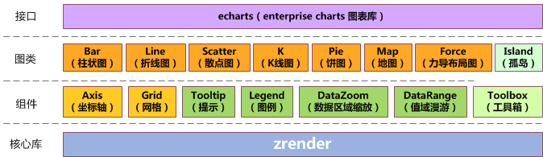Glossary
General Terms
| Term | Description |
|---|---|
| chart | A complete chart that may contain axes, legends, etc. It can either be a "basic" chart like line and pie, or a "combination" of those basic charts. |
| axis | A fixed reference line for the measurement of Cartesian coordinates. It can be divided into three types: category axis, value axis and time axis. |
| xAxis | The horizontal axis of a two-dimensional plot in Cartesian coordinates. It is category axis by convention and default. |
| yAxis | The vertical axis of a two-dimensional plot in Cartesian coordinates. It is value axis by convention and default. |
| grid | A network of regularly spaced lines on a Cartesian coordinate system that cross one another at right angles and are numbered to enable the precise location of a coordinate. |
| legend | The wording on a chart explaining the symbols used. |
| dataRange | Often used to select the scale of geographical data. |
| dataZoom | Often used to zoom in on a specific data area when the collection of data sets are large and complex. |
| roamController | Zoom and roam controller for the map. |
| toolbox | A set of functions accessible from a single menu, such as MarkLine, dataZoom, etc. |
| tooltip | A small "hover box" with detailed information about the item being hovered over. |
| timeline | Often used to display a list of data in chronological order. |
| series | Data series. A chart may contain multiple series, and each series may contain multiple data. |
Charts Terms
| Term | Description |
|---|---|
| line | Including line, stacked line, area, stacked area. |
| bar | Including colunm (vertical), stacked column, bar (horizontal), stacked bar. |
| scatter | Including scatter and bubble. In scatter, at least two-dimensional data are needed. When the third dimensional data joins the company, it can be mapped to color or size. When mapped to size, scatter turns into bubble. |
| candlestick | We call it 'k' for short. Used primarily to describe price movements of a security, derivative, or currency for a designated span of time. |
| pie | Including pie and doughnut. Supports two kinds of (radius, area) Nightingale’s rose diagram. |
| radar | Including radar and filled radar. A graphical method of displaying multivariate data. |
| chord | Commonly used to display relational data. The outer part is a doughnut, used to reflect the proportion of data; the inner part is the chords that connect each sectors, used to display relational data. |
| force-directed chart | Often used to display complex topology. |
| map | Including World Map, China Map, Map of China Provinces & Cities, and extended maps on GeoJSON format. Supports SVG extension, such as body composition, football pitch, interior space, etc. |
| heatmap | Often used to display data distribution information. |
| gauge | Often used to display the key index in a BI system. |
| funnel | Often used to display the data change in a data process, like filtered, combined etd, common in BI system. |
| evnetRiver | EventRiver is commonly used to display multiple events with time attribute, the evolution of events can be shown by time sequence. |
| treemap | Treemap is commonly used to display a tree structure. And treemaps are very effective when size is the most important feature to be displayed.. |
| venn | Venn shows all possible logical relations between a finite collection of different sets. |
| tree | Used to visualize the hierarchy of tree structure. |
| word cloud | A visual representation for text data, typically used to depict keyword metadata (tags) on websites, or to visualize free form text |
Chart Types
The charting library includes basic single chart type and combination chart type.

single chart type: line
| line | stacked line | area | stacked area |
|---|---|---|---|
 |
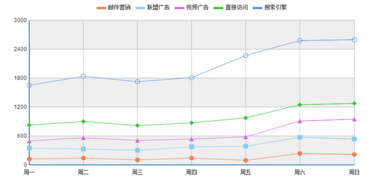 | 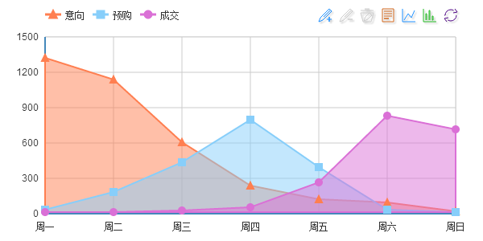 | 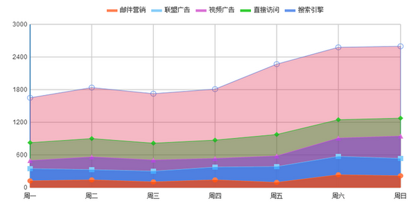 |
single chart type: bar (column)
| column | stacked column | bar | stacked bar |
|---|---|---|---|
 |
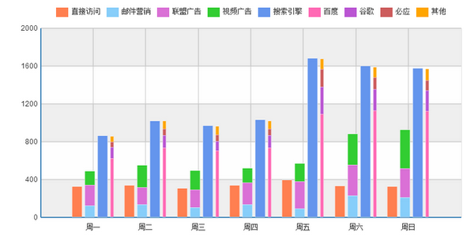 | 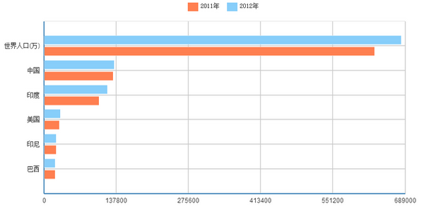 | 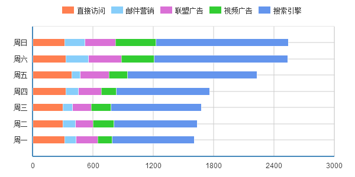 |
single chart type: scatter
| scatter | bubble | |
|---|---|---|
 |
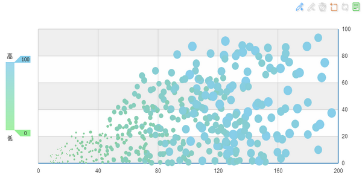 | 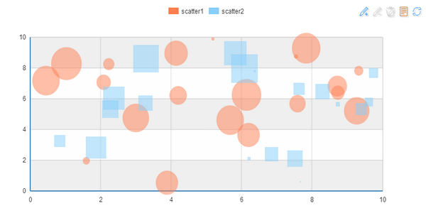 |
single chart type: k (candlestick)
| candlestick | |
|---|---|
 |
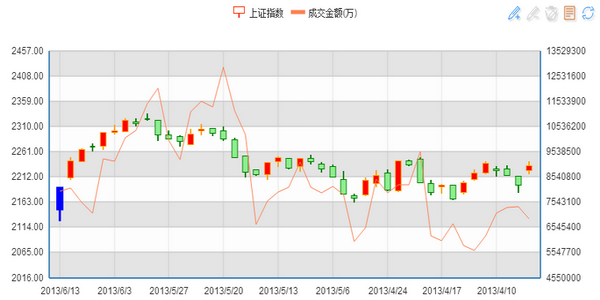 |
single chart type: pie
| pie | doughnut | Nightingale’s rose diagram |
|---|---|---|
| 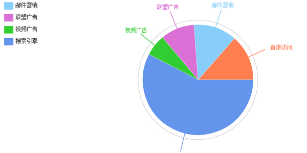 | 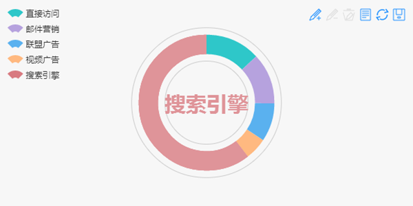 | 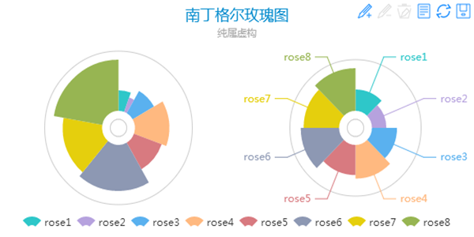 |
single chart type: radar
| radar | filled radar |
|---|---|
| 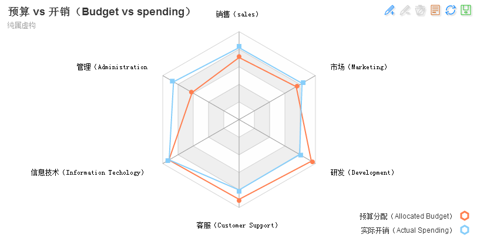 | 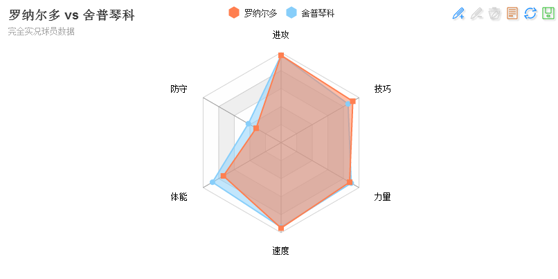 |
single chart type: chord
| chord | |
|---|---|
| 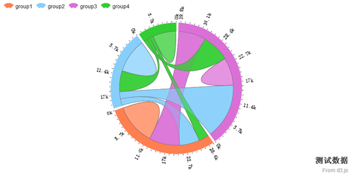 | 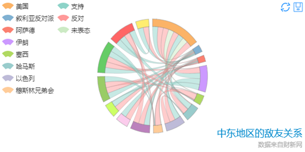 |
single chart type: force
| force-directed chart | ||
|---|---|---|
| 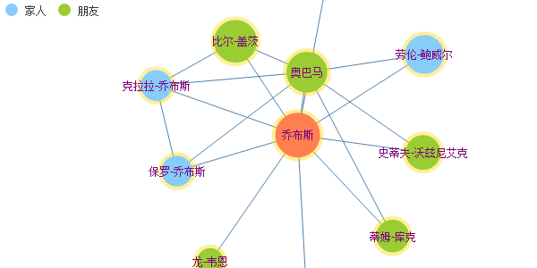 | 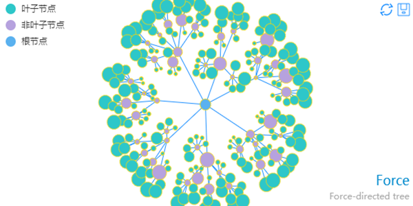 | 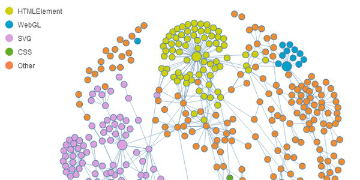 |
single chart type: map
| China Map | Map of China Provinces & Cities | World Map |
|---|---|---|
| 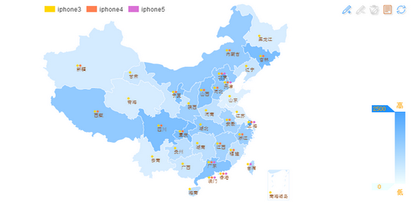 | 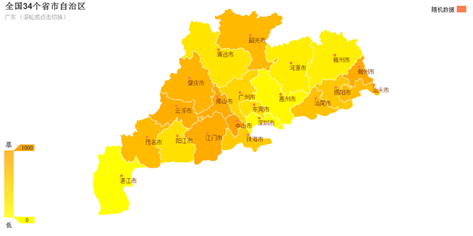 | 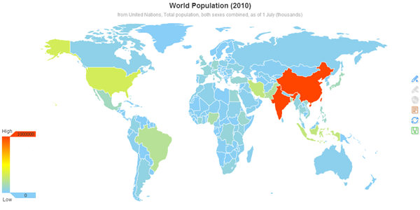 |
| Sub-Region Mode | Standard GeoJson Extension | SVG Extension |
 |
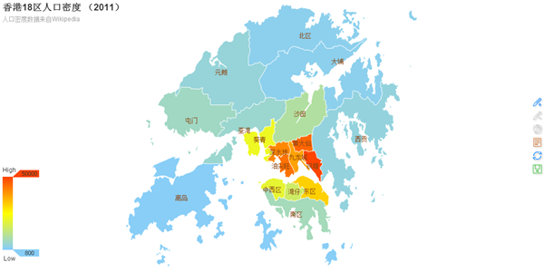 | 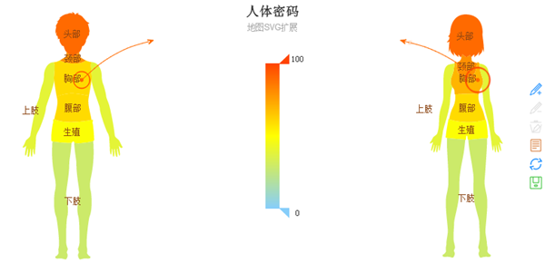 |
single chart type: heatmap
| heatmap | ||
|---|---|---|
| 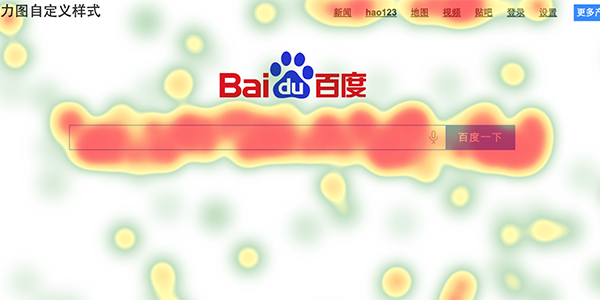 | 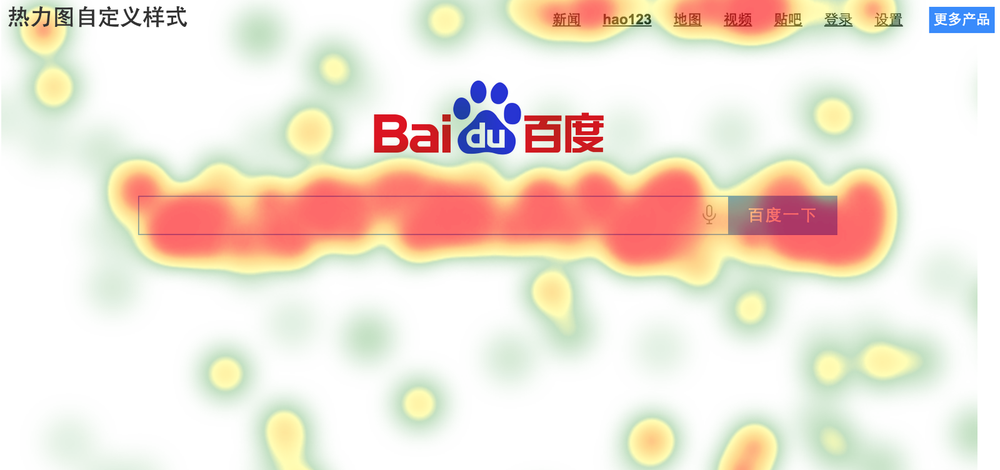 | 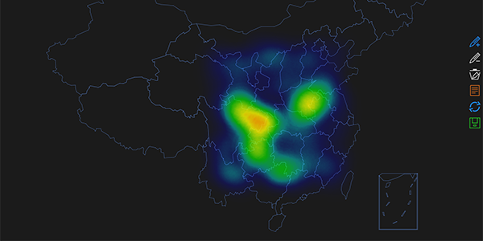 |
single chart type: gauge
| angular gauge | |
|---|---|
| 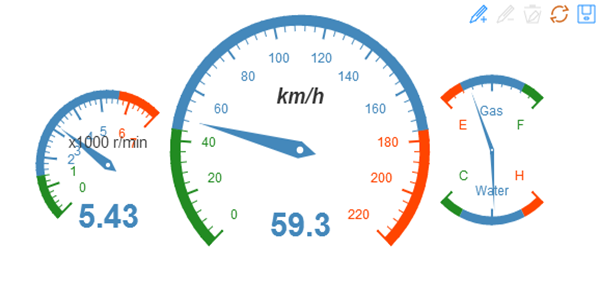 | 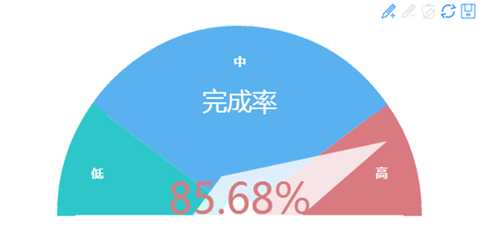 |
single chart type: funnel
| funnel | ||
|---|---|---|
 |
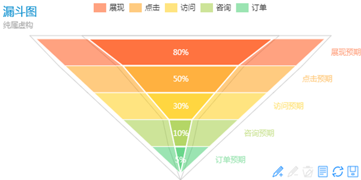 | 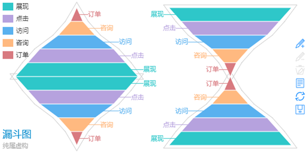 |
single chart type: eventRiver
| eventRiver | ||
|---|---|---|
 |
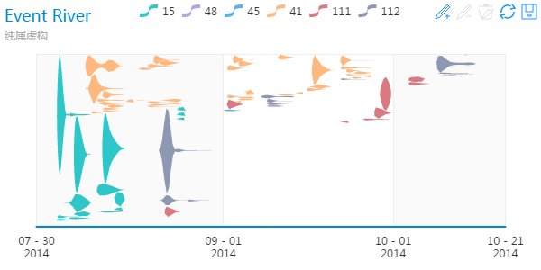 | |
single chart type：treemap
| Treemap | |
|---|---|
| 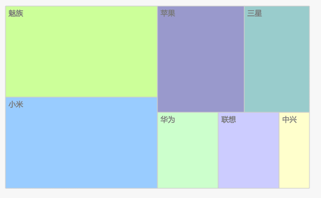 | 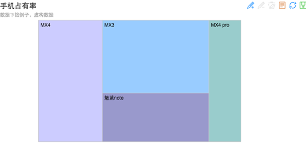 |
single chart type：tree
| tree | |
|---|---|
| 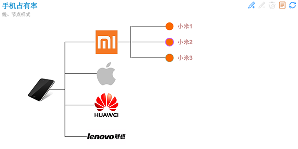 | 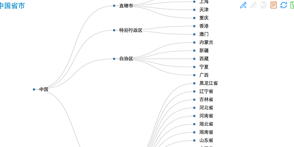 |
single chart type：venn
| Venn |
|---|
| 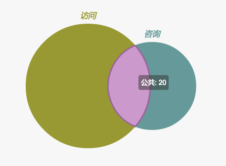 |
single chart type：wordCloud
| Venn |
|---|
| 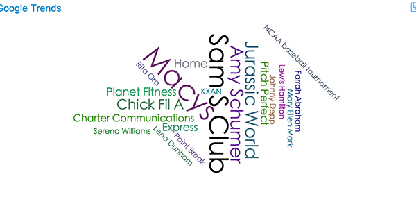 |
Import ECharts
We offer you various ways to import the ECharts library in your page, so that you can always choose the right one for your project.
modular package import
If you are familiar with modular programming, and your project is modular and follows the AMD module specification, then it will be fairly easy to import echarts in your page; Import a module loader, like esl.js, and configure the packages path to point to src, and you will enjoy the chart’s maximum flexibility, such as load-on-demand. Since ECharts is based on ZRender, you also need to download ZRender locally. Reference is made to demo. Now you need to configure as follows.
Please note: although package import maximizes flexibility in the development phase, it is not intended for going online directly. Reducing the number of documents requested is the most fundamental rule of front-end optimization, so please be sure to compress files when you go on line.
//from echarts example
require.config({
packages: [
{
name: 'echarts',
location: '../../src',
main: 'echarts'
},
{
name: 'zrender',
location: '../../../zrender/src', // zrender and echarts are in the same directory.
main: 'zrender'
}
]
});
modular single file import (preferred)
If you use modular programming, but do not have the packaging environment, or do not want to include a third party library source file to your project, then single file import seems to be a good choice. Like modular package import, you have to be familiar with modular programming.
Begin with 2.1.8, we have created a powerful tool for echarts compression: echarts-optimizer. As you can see below, the build folder has included several single files of different combinations which are generated by echarts-optimizer, and you are free to choose one of them according to your needs:
- dist ( folder ) : compressed
-
- echarts.js : The echarts core file which should be import by a <script> tag, an AMD loader (esl.js) has been included in this file.
- chart ( folder ) : Via dependency analysis, echarts-optimizer generates a single file for every chart types, you can choose one of them according to your needs:
- line.js : Line ( require echarts/chart/bar as the same time if Magic switch is needed )
- bar.js : Bar ( require echarts/chart/line as the same time if Magic switch is needed )
- scatter.js : Scatter
- k.js : Candlestick
- pie.js : Pie ( require echarts/chart/funnel as the same time if Magic switch is needed )
- radar.js : Radar
- map.js : Map
- force.js : Force-directed Chart ( require echarts/chart/chord as the same time if Magic switch is needed )
- chord.js : Chord ( require echarts/chart/force as the same time if Magic switch is needed )
- funnel.js : Funnel ( require echarts/chart/pie as the same time if Magic switch is needed )
- gauge.js : Gauge
- eventRiver.js : EventRiver
- source ( folder ) : uncompressed, same as dist which can be used to debug.
See example in ECharts single file import, stored in example/www. First you need to create a script tag src to echarts core ( echarts.js ).
//from echarts example
<body>
<div id="main" style="height:400px;"></div>
...
<script src="./js/echarts.js"></script>
</body>
You have get an AMD environment after echarts.js import, require.conifg as below:
//from echarts example
<body>
<div id="main" style="height:400px;"></div>
...
<script src="./js/echarts.js"></script>
<script type="text/javascript">
require.config({
paths: {
echarts: './js/dist'
}
});
</script>
</body>
You can use ECharts by dynamic loading after the require.config.
//from echarts example
<body>
<div id="main" style="height:400px;"></div>
...
<script src="./js/echarts.js"></script>
<script type="text/javascript">
require.config({
paths: {
echarts: './js/dist'
}
});
require(
[
'echarts',
'echarts/chart/line', // load-on-demand, don't forget the Magic switch type.
'echarts/chart/bar'
],
function (ec) {
var myChart = ec.init(document.getElementById('main'));
var option = {
...
}
myChart.setOption(option);
}
);
</script>
</body>
In a nutshell, it takes four steps to import ECharts in module single file.
- Prepare a Dom with size (width and height) for ECharts. (Of course it can be dynamically generated.)
- Create a script tag src to echarts core ( echarts.js ).
- Configure a ECharts path for the module loader, and link to echarts.js from the current page, see above.
- Dynamically load ECharts and use callback function to initialize it. (PS: if you want to use ECharts on a page where you've already loaded it, just require('echarts').init(dom).)
plain single file import
The 1.3.5 release added support for plain import. If your project is not based on modularity, or it’s based on CMD specification (such as using sea.js), then it may not be appropriate for you to include the modular AMD-based ECharts. Therefore it is recommended that you use script plain import. Forget about require, you can directly use two global namespaces - ECharts, ZRender - after script plain import. Reference is made to ECharts plain import. Note that excanvas judges Canvas support by inserting the body tag into Canvas node, so if you put the script tag of ECharts into the head tag, IE8- browsers would give an error; the solution is to move the script tag into (behind) the body tag.
In the plain import environment, you can import common modules directly through namespace, same as the modular path, such as:
echarts.config = require('echarts/config'), zrender.tool.color = require('zrender/tool/color').
//from echarts example
<body>
<div id="main" style="height:400px;"></div>
...
<script src="example/www2/js/dist/echarts-all.js"></script>
<script>
var myChart = echarts.init(document.getElementById('main'));
var option = {
...
}
myChart.setOption(option);
</script>
</body>
Single files that can be directly imported are listed below:
- dist/echarts-all.js : a compressed library of all the chart types, including World Map, China Map and Map of China Provinces & Cities.
- source/echarts-all.js : an uncompressed library of all the chart types, including World Map, China Map and Map of China Provinces & Cities. Available for debugging purposes.
Custom Build ECharts Single File
More detail about echarts-optimizer can be found at README.md
Initialization
After getting echarts interface through require (or in namespace), you can start to initialize chart. echarts interface has only one init method. When implementing init, pass in a dom node with size (width and height are not necessarily visible, as long as they can be calculated) and then you will get the instances of the chart object. The charting library has multiple instances, which means that you can init multiple charts at the same page on multiple doms, and if you init on the same dom repeatedly, the existing instance will be automatically disposed (1.4.0+ ). init method is illustrated as follows:
| Name | Default | Description |
|---|---|---|
| {ECharts} init | {dom} dom, {string | Object =} theme |
Initialization interface, returns ECharts instances. Dom is the node for charts. Theme is optional. For built-in themes ('macarons', 'infographic'), directly pass in name. For custom extended themes, pass in the theme object. Like this :
var myCharts = echarts.init(document.getElementById('main'), 'macarons')； |
For available methods of chart instances, see Methods.
The initialization code after including ECharts is as follows:
// As the entrance
require(
[
'echarts',
'echarts/chart/pie'
],
function (ec) {
var myChart = ec.init(document.getElementById('main'));
myChart.setOption({...});
}
);
// -----------------------------
// For non-entrance or when using again, the chart has been loaded and registered
require('echarts').init(dom).setOption({...});
// If you need to use of ECharts later on, you'd better save the chart instances returned by init.
var myChart = require('echarts').init(dom);
myChart.setOption({...});
If you are familiar with modularity, you may skip the following code.
// If you are strange to modularity, you can...
var echarts;
require(['echarts'], function (ec){
echarts = ec;
});
// Yes, save echarts after loading it, and use it as namespace.
Instance Methods
Instance refers to the object returned by interface init (), such as "myChart" in the code above. All the non-get interfaces return themselves to support chained calls.
| Name | Default | Description |
|---|---|---|
| {self} setOption | {Object} option, {boolean=} notMerge |
Universal interface, controls all the configuration options of chart instances (see option). When called multiple times, the option will be merged by default, which makes setOption easily become a universal method to update any attributes. For example, if you only want to change the title text, you only need to: setOption({title : {text : 'new title'}}); Of course, you can also stop the option from being merged with the last option by setting the notMerger parameter to true, when data or length changes between each setOption. Since 2.0.0, ECharts added support for timeline the component. When option includes timeline (see timeline), each individual option should be placed into an array named options, such as myCharts.setOption({
timeline : {...},
options : [
{ // option1
title : {...},
series : [...]
},
{...}, // option2
...
]
});
|
| {Object} getOption | {void} | Returns the clone (copy) of the currently displayed option held internally. |
| {self} setSeries | {Array} series, {boolean=} notMerge |
Data interface, the data array generated by data-driven chart. (see series), same result as calling setOption({series : {...}}, notMerge). |
| {Object} getSeries | {void} | Returns the clone (copy) of the currently displayed option held internally, same result as returning getOption().series. |
| {self} addData | One set of data：
{number} seriesIdx {number | Object} data {boolean=} isHead {boolean=} dataGrow {string=} additionData Add multiple sets of data: {Array} params |
Dynamic data interface. Try this (Line & Bar) » Try this (Scatter & Candlestick) » Try this (Pie & Radar) »
seriesIdx: series index data: adds data isHead: whether to insert at the head of the line. Defaults to unspecified. When unspecified or false, insert at the end of the line. dataGrow: whether to increase the length of the data line. Defaults to unspecified. When unspecified or false, remove the data of the target array. additionData: whether to add category axis (pie as the legend) data. Other operations are same as isHead and dataGrow. When adding multiple sets of data, parameters are: params == [[seriesIdx, data, isHead, dataGrow, additionData], [...]] |
| {self} addMarkPoint | {number} seriesIdx
{Object} markData |
add markPoint interface, which includes
seriesIdx: series index markData: [markLine] object, same as series.markPoint, supports multiple |
| {self} addMarkLine | {number} seriesIdx
{Object} markData |
add markPoint interface, which includes
seriesIdx: series index markData: [markLine] object, same as series.markLine, supports multiple |
| {self} delMarkPoint | {number} seriesIdx
{string} markName |
delete a single markPoint interface, which includes
seriesIdx: series index markName: [markPoint] name |
| {self} delMarkLine | {number} seriesIdx
{string} markName |
delete a single markLine interface, which includes
seriesIdx: series index markName: [markLine] name. The default makeLine name is the starting point's name in the makeLine's data. While the ending point is named too, like the map, both point's name would be joined as the default name like this "nameStart > nameEnd", such as [{name:'Beijing', value:100}, {name:'Shanghai'}] In this case, markName is "Beijing > notMerge" |
| {self} on | {string} eventName, {Function} eventListener |
event bind, mount all the event naming on require ('echarts/config'). EVENT (echarts.config.EVENT for non-modular) namespace. It is recommended that you use this namespace as the event name to include. Events supported by the current version are:
-----------------------Base Evetn----------------------- REFRESH, RESTORE, RESIZE, CLICK, DBLCLICK, HOVER, MOUSEOUT, -------------------Interactive Event-------------------- DATA_CHANGED, DATA_VIEW_CHANGED, MAGIC_TYPE_CHANGED, TIMELINE_CHANGED, DATA_ZOOM, DATA_RANGE, DATA_RANGE_SELECTED, DATA_RANGE_HOVERLINK, LEGEND_SELECTED, LEGEND_HOVERLINK, MAP_ROAM, MAP_SELECTED, PIE_SELECTED, FORCE_LAYOUT_END, event debugging » |
| {self} un | {string} eventName, {Function} eventListener |
unbind event |
| {self} setTheme | {string | Object} theme | Set the theme. For built-in themes ('macarons', 'infographic'), pass in the name directly. For custom extended themes, pass in the theme object. |
| {self} connect | {ECharts | Array <ECharts>} connectTarget | Chart Linkage, the linkage target passed in is ECharts instance, supports arrays. Supports tooltip linkage in Cartesian charts, automatic stitching of the saved images. The supported linkage events are:
REFRESH，RESTORE，MAGIC_TYPE_CHANGED DATA_ZOOM，DATA_RANGE，LEGEND_SELECTED Chart Linkage » |
| {self} disConnect | {ECharts | Array <ECharts>} connectTarget | Disconnect chart linkage |
| {self} showLoading | {Object} loadingOption | Option for the loading screen, (see loadingOption), show a loading label text. try this » |
| {self} hideLoading | {void} | Option for the loading screen, hide the loading screen. |
| {ZRender} getZrender | {void} | Get the ZRender instance used by the current chart, available for extra images addition or a high level of customization. For zrender interface, see ZRender. |
| {string} getDataURL | {string=} imgType | Get the current chart's Base64 image dataURL, not supported on IE8-, imgType: image type. Supports png|jpeg. Defaults to png. |
| {Dom} getImage | {string=} imgType | Get the current chart's imag, imgType: image type. Supports png|jpeg. Defaults to png. |
| {self} resize | {void} | ECharts does not bind the resize event, and the internal system do not know whether the size of the display area changes or not. So you can bind the events you need, update the area by calling resize. Like window.onresize = myChart.resize. |
| {self} refresh | {void} | Refresh the chart. LEGEND_SELECTED, DATA_ZOOM and DRAG remain unchanged. |
| {self} restore | {void} | Restore the chart. All the states are cleared and restored to the original states. |
| {self} clear | {void} | Clear the drawing content. Instances are available after Clearing. |
| {void} dispose | {void} | Dispose the chart instances. Instances are unavailable after disposing. |
Options
option
Chart options, including all the configuration options for ECharts demos: general options , component options , data options
| Name | Description |
|---|---|
| {color} backgroundColor | The background color or gradient for the outer chart area, (see backgroundColor). Support rgba and defaults to null, transprent. |
| {Array} color | List of color for the array series, (see color), possible array is: ['#87cefa', 'rgba(123,123,123,0.5)','...']. When there are more series than colors in the list, new colors are pulled from the start again. |
| {boolean} renderAsImage | Allows rendering as image in any browser but IE8-, (see renderAsImage). |
| {boolean} calculable | Specifies whether the drag-recalculate feature will be enabled. Defaults to false. (See calculable, and other related properties like calculableColor, calculableHolderColor, nameConnector, valueConnector). |
| {boolean} animation | Specifies whether the animation will be enabled. Defaults to true. (See animation, and other related properties like addDataAnimation, animationThreshold, animationDuration, animationDurationUpdate animationEasing). |
| {Object} timeline | Timeline (see timeline), at most one timeline control is allowed in one chart. |
| {Object} title | Title, (see title), at most one title control is allowed in one chart. |
| {Object} toolbox | Toolbox, (see toolbox), at most one toolbox is allowed in one chart. |
| {Object} tooltip | Tooltip, (see tooltip), A small "hover box" with detailed information about the item being hovered over. |
| {Object} legend | Legend, (see legend), at most one legend is allowed in one single/combination chart. |
| {Object} dataRange | DataRange, (see dataRange), data range. |
| {Object} dataZoom | DataZoom, (see dataZoom), data zoom. |
| {Object} roamController | zoom and roam controller, (see roamController), use for the map. |
| {Object} grid | A network of regularly spaced lines on a Cartesian coordinate system, (see grid). |
| {Array | Object} xAxis | The horizontal axis array of a two-dimensional plot in Cartesian coordinates, (see xAxis), and each item in the array represents one horizontal axis. According to Standard (1.0), at most two horizontal axes are allowed in one chart. |
| {Array | Object} yAxis | The vertical axis array of a two-dimensional plot in Cartesian coordinates, (see yAxis), and each item in the array represents one vertical axis. According to Standard (1.0), at most two vertical axes are allowed in one chart. |
| {Array} series | The data array generated by data-driven chart, (see series). Each item in the array stands for a series' options and data. |
timeline
timeline, at most one timeline control is allowed in one chart. Try bar », scatter », pie », map »
| Property | Default | Description |
|---|---|---|
| {boolean} show | true | Specifies whether to show timeline. Valid values are: true (show) | false (hide). |
| {number} zlevel | 0 | The first grade cascading control. Every zlevel will be allocated to a independent canvas, charts and components with the same zlevel will be rendered in the same canvas. The higher zlevel the closer to the top. More canvas dom will need more memory and performance, so never set too many zlevel. Most of the time, the second grade cascading control 'z' is recommended. |
| {number} z | 4 | The second grade cascading control, In the same canvas (zlevel), the higher z the closer to the top. |
| {string} type | 'time' | When the type is time, interval of the timeline is calculated based on the time span. Can also be: 'number'. |
| {boolean} notMerge | false | Whether to merge the options for timeline When called multiple times, same as the second parameter of setOption. (See Instance Methods). |
| {boolean} realtime | true | Specifies whether the chart will be displayed in real time when you drag or click the timeline. Default to false (CAN NOT be changed) in the explorer which does't support canvas, such as IE6/7/8. |
| {number | string} x | 80 | Set abscissa on the upper left corner of the timeline in px, or in percent (string) such as '50%' (horizontal center of the display area). |
| {number | string} y | null | Set ordinate on the upper left corner of the timeline in px, or in percent (string). Defaults to null. The position varies with y2, such as '50%' (vertical center of the display area). |
| {number | string} x2 | 80 | Set abscissa on the lower right corner of the timeline in px, or in percent (string) such as '50%' (horizontal center of the display area). |
| {number | string} y2 | 0 | Set ordinate on the lower right corner of the timeline in px, or in percent (string) such as '50%' (vertical center of the display area). |
| {number} width | adaptive | Width of the timeline, defaults to the total width - x - x2, in px, ignore x2 after specifying width. See the image below.
Can also be set in percent (string), such as '50%' (half the width of the display area). |
| {number} height | 50 | Height of the timeline, in px, or in percent (string) such as '50%' (half the height of the display area). |
| {color} backgroundColor | 'rgba(0,0,0,0)' | The color of the background. Defaults to transparent. |
| {number} borderWidth | 0 | The width of the border. |
| {color} borderColor | '#ccc' | The color of the border. |
| {number | Array} padding | 5 | The inner padding, in px, defaults to 5. Can be set as array - [top, right, bottom, left], same as css, see image below. |
| {string} controlPosition | 'left' | The position of play controller. Valid values are: 'left' | 'right' | 'none' |
| {boolean} autoPlay | false | Specifies whether to play automatically. |
| {boolean} loop | true | Specifies whether to play in a loop. |
| {number} playInterval | 2000 | Play time interval, in ms. |
| {Object} lineStyle | {
color: '#666',
width: 1,
type: 'dashed'
} |
Sets the line style of the timeline, (see lineStyle). |
| {Object} label | {
show: true,
interval: 'auto',
rotate: 0,
formatter: null,
textStyle: {
color: '#333'
}
} |
timeline label text show: specifies whether to show. interval: sets interval. Defaults to 'auto'. Valid values are: 'auto' (automatically hide those that cannot be displayed) | 0 (unhide all) | {number} rotate: the angle of rotation, defaults to 0 (not rotate). Positive value for counterclockwise rotation, negative value for clockwise rotation. Valid values are: -90 ~ 90 formatter: interval name formatter: {string} (Template) | {Function} textStyle: text style, (see textStyle). |
| {Object} checkpointStyle | {
symbol : 'auto',
symbolSize : 'auto',
color : 'auto',
borderColor : 'auto',
borderWidth : 'auto',
label: {
show: false,
textStyle: {
color: 'auto'
}
}
} |
timeline checkpoint symbol: symbol of the checkpoint, defaults to the symbol on timeline. symbolSize: size of the checkpoint symbol, defaults to the size of symbol on timeline. color: color of the checkpoint symbol, defaults to the color of the checkpoint. A specific color can be specified; If unspecified, defaults to '#1e90ff'. borderColor: the color of the checkpoint symbol border. borderWidth: the width of the checkpoint symbol border. label: see above. |
| {Object} controlStyle | {
itemSize: 15,
itemGap: 5,
normal : {
color : '#333'
},
emphasis : {
color : '#1e90ff'
}
} |
the style of timeline controller. ItemSize, itemGap and both normal and highlight color can be specified. |
| {string} symbol | 'emptyDiamond' | the symbol for timeline tick, same as serie.symbol. |
| {number} symbolSize | 4 | size of the symbol for timeline tick, same as serie.symbolSize. |
| {number} currentIndex | 0 | The current index position, corresponding to options array, used to display a specific series. |
| {Array} data | [] | timeline list, also the timeline label content. |
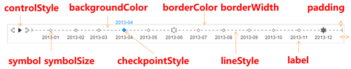
title
title. In one chart, at most one title control is allowed, which can be devided into title and subtitle.
| Property | Default | Description |
|---|---|---|
| {boolean} show | true | Specifies whether to show timeline. Valid values are: true (show) | false (hide). |
| {number} zlevel | 0 | The first grade cascading control. Every zlevel will be allocated to a independent canvas, charts and components with the same zlevel will be rendered in the same canvas. The higher zlevel the closer to the top. More canvas dom will need more memory and performance, so never set too many zlevel. Most of the time, the second grade cascading control 'z' is recommended. |
| {number} z | 6 | The second grade cascading control, In the same canvas (zlevel), the higher z the closer to the top. |
| {string} text | '' | title text, '\n' represents a line feed. |
| {string} link | '' | title text hyperlink. |
| {string} target | null | Specifies a window to open the title hyperlink. Can be one of 'self' | 'blank'. If unspecified, equal to 'blank' (a new window). |
| {string} subtext | '' | subtitle text, '\n' represents a line feed. |
| {string} sublink | '' | subtitle text hyperlink. |
| {string} subtarget | null | Specifies a window to open the subtitle hyperlink. Can be one of 'self' | 'blank'. If unspecified, equal to 'blank' (a new window). |
| {string | number} x | 'left' | horizontal position. Defaults to left. Valid values are: 'center' | 'left' | 'right' | {number}(x-coordinate, in px). |
| {string | number} y | 'top' | vertical position. Defaults to top. Valid values are: 'top' | 'bottom' | 'center' | {number}(y-coordinate, in px). |
| {string} textAlign | null | horizontal alignment. It is further determined by the x option by default. Valid values are: left' | 'right' | 'center. |
| {color} backgroundColor | 'rgba(0,0,0,0)' | The color of the title's background. Defaults to transparent. |
| {string} borderColor | '#ccc' | The color of the drawn border around the title. |
| {number} borderWidth | 0 | The width of the drawn border around the title, in px, defaults to 0 (no border). |
| {number | Array} padding | 5 | The inner padding of the title, in px, defaults to 5. Can be set as array - [top, right, bottom, left], same as css, see image below. |
| {number} itemGap | 5 | The vertical gap between each item in the title/subtitle, in px, defaults to 10. |
| {Object} textStyle | {
fontSize: 18,
fontWeight: 'bolder',
color: '#333'
} |
the style of title text, (see textStyle). |
| {Object} subtextStyle | {
color: '#aaa'
} |
the style of subtitle text, (see textStyle). |
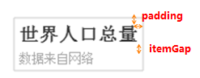
toolbox
Toolbox, at most one toolbox is allowed in one chart. Try this »
| Property | Default | Description |
|---|---|---|
| {boolean} show | false | Specifies whether to show toolbox. Valid values are: true (show) | false (hide). |
| {number} zlevel | 0 | The first grade cascading control. Every zlevel will be allocated to a independent canvas, charts and components with the same zlevel will be rendered in the same canvas. The higher zlevel the closer to the top. More canvas dom will need more memory and performance, so never set too many zlevel. Most of the time, the second grade cascading control 'z' is recommended. |
| {number} z | 6 | The second grade cascading control, In the same canvas (zlevel), the higher z the closer to the top. |
| {string} orient | 'horizontal' | layout manner. Defaults to horizontal. Valid values are: 'horizontal' | 'vertical'. |
| {string | number} x | 'right' | horizontal position. Defaults to center. Valid values are: 'center' | 'left' | 'right' | {number}(x-coordinate, in px). |
| {string | number} y | 'top' | vertical position. Defaults to top. Valid values are: 'top' | 'bottom' | 'center' | {number}(y-coordinate, in px). |
| {color} backgroundColor | 'rgba(0,0,0,0)' | The color of the toolbox's background. Defaults to transparent. |
| {color} borderColor | '#ccc' | The color of the drawn border around the toolbox. |
| {number} borderWidth | 0 | The width of the drawn border around the toolbox, in px, defaults to 0 (no border). |
| {number | Array} padding | 5 | The inner padding of the toolbox, in px, defaults to 5. Can be set as array - [top, right, bottom, left], same as css, see image below. |
| {number} itemGap | 10 | The pixel gap between each item. Defaults to 10. It is horizontal in a toolbox with horizontal layout, and vertical in a toolbox with vertical layout. See image below. |
| {number} itemSize | 16 | the size of toolbox icon, in px. |
| {Array <color>} color | ['#1e90ff','#22bb22','#4b0082','#d2691e'] | An array containing the default colors for the toolbox's icons. When all colors are used, new colors are pulled from the start again. Default colors can also be set on specific features. |
| {color} disableColor | '#ddd' | Specifies the disable color. |
| {color} effectiveColor | 'red' | Specifies the effective color. |
| {boolean} showTitle | true | Specifies whether the toolbox text will be showed. Defaults to true. |
| {Object} textStyle | {} | the style of toolbox text, (See textStyle). |
| {Object} feature | {
mark : {
show : false,
title : {
mark : '辅助线开关',
markUndo : '删除辅助线',
markClear : '清空辅助线'
},
lineStyle : {
width : 2,
color : '#1e90ff',
type : 'dashed'
}
},
dataZoom : {
show : false,
title : {
dataZoom : '区域缩放',
dataZoomReset : '区域缩放后退'
}
},
dataView : {
show : false,
title : '数据视图',
readOnly: false,
lang: ['数据视图', '关闭', '刷新']
},
magicType: {
show : false,
title : {
line : '折线图切换',
bar : '柱形图切换',
stack : '堆积',
tiled : '平铺',
force: '力导向布局图切换',
chord: '和弦图切换',
pie: '饼图切换',
funnel: '漏斗图切换'
},
option: {
// line: {...},
// bar: {...},
// stack: {...},
// tiled: {...},
// force: {...},
// chord: {...},
// pie: {...},
// funnel: {...}
},
type : []
},
restore : {
show : false,
title : '还原'
},
saveAsImage : {
show : false,
title : '保存为图片',
type : 'png',
lang : ['点击保存']
}
}
|
Currently toolbox supports all the features listed below. For custom features, try this »
|
tooltip
Tooltip, a small "hover box" with detailed information about the item being hovered over. Try this »
| Property | Default | Description |
|---|---|---|
| {boolean} show | true | Specifies whether to show tooltip. Valid values are: true (show) | false (hide). |
| {number} zlevel | 1 | The first grade cascading control. Every zlevel will be allocated to a independent canvas, charts and components with the same zlevel will be rendered in the same canvas. The higher zlevel the closer to the top. More canvas dom will need more memory and performance, so never set too many zlevel. Most of the time, the second grade cascading control 'z' is recommended. |
| {number} z | 8 | The second grade cascading control, In the same canvas (zlevel), the higher z the closer to the top. |
| {boolean} showContent | true | Specifies whether to show the content of tooltip. Set it to false when you just need the tooltip to trigger events or show axisPointer. . Valid values are: true (show) | false (hide). |
| {string} trigger | 'item' | Type of trigger. Defaults to 'item'. See image below. Valid values are: 'item' | 'axis'. |
| {Array | Function} position | null | Specifies position, pass in {Array}, like [x, y], fixed position [x, y]; pass in {Function}, like function([x, y]) {return [newX,newY]}. The default displayed coordinates are input parameters, the new user-specified coordinates are output return values. |
| {string | Function} formatter | null | content formatter: {string} (Template) | {Function}. Supports asynchronous callback. See below. |
| {string | Function} islandFormatter | '{a} < br/>{b} : {c}' | island content formatter. For Drag-Recalculate only: {string} (Template) | {Function}. See below. |
| {number} showDelay | 20 | The number of milliseconds to wait until the tooltip is shown when the mouse moves across a point or chart. Placing a delay on a tooltip before it is displayed can prevent frequent switch, especially when the tooltip text is requested asynchronously. |
| {number} hideDelay | 100 | The number of milliseconds to wait until the tooltip is hidden when mouse out from a point or chart. |
| {number} transitionDuration | 0.4 | The duration in seconds of the animated transition. If you want the tooltip to follow the mouse as it moves across a point or chart, setting showDelay to 0 is the key, but setting transitionDuration to 0 can also make a difference in interactive experiences. |
| {boolean} enterable | false | Specifies whether to let the mouse go into the tip dom, default to false. Let it be true if you need interaction like link | button etc. |
| {color} backgroundColor | 'rgba(0,0,0,0.7)' | The background color for the tooltip. Defaults to a black color (opacity to 30%). |
| {string} borderColor | '#333' | The color of the tooltip border. |
| {number} borderRadius | 4 | The radius of the rounded border corners, in px, defaults to 4. |
| {number} borderWidth | 0 | The pixel width of the tooltip border, defaults to 0 (no border). |
| {number | Array} padding | 5 | The inner padding of the tooltip, in px, defaults to 5. Can be set as array - [top, right, bottom, left], same as css. |
| {Object} axisPointer | {
type: 'line',
lineStyle: {
color: '#48b',
width: 2,
type: 'solid'
},
crossStyle: {
color: '#1e90ff',
width: 1,
type: 'dashed'
},
shadowStyle: {
color: 'rgba(150,150,150,0.3)',
width: 'auto',
type: 'default'
}
} |
axis pointer, triggered by axis. Default type is line. Valid types are: 'line' | 'cross' | 'shadow' | 'none'. Each type has its corresponding style, see below.
lineStyle: style for line pointer, (see lineStyle), crossStyle: style for crosshairs pointer, (see lineStyle), shadowStyle: style for shadow pointer, (see areaStyle, areaStyle. Size is set to 'auto' by default. Width can be specified. |
| {Object} textStyle | { color:'#fff' } | style for the tooltip text. Defaults to white, (see textStyle). |
content formatter：Try this »
-
{string}, Template, its variables are:
- {a} | {a0}
- {b} | {b0}
- {c} | {c0}
- {d} | {d0} (some chart types do not have this variable)
- {e} | {e0} (some chart types do not have this variable)
- If there are multiple sets of data, there will be multiple sets of varaibles accordingly, like {a1}, {b1}, {c1}, {d1}, {a2}, {b2}, {c2}, {d2}, ...
- Here are what variable a, b, c and d reprensent in different chart types:
- line & area, column & bar, candlestick: a (series name), b(category value), c (value), d(null)
- scatter & bubble: a (series name), b (data name), c (value array), d(null)
- map: a (series name), b (area name), c(merged value), d(null)
- pie, radar, gauge, funnel: a (series name), b (data item name)，c(value), d (pie: percent | radar: indicator name)
- force, chord :
- node : a (series name)，b (node name)，c (node value), d (node index), e
- link : a (series name)，b (link name, default bigEndNodeName-smallEndNodeName)，c(link.value), d(name or index of big end node), e(name or index of small end node)
-
{Function}, the list of parameters passed in is [params, ticket, callback], detail as follows:
- <Array> params : array content and template varaibles are the same
[ { seriesIndex: 0, seriesName: 'Sales', name: 'Monday', dataIndex: 0, data: data, name: name, value: value, percent: special, // pie indicator: special, // radar, force, chord value2: special2, // force, chord indicator2: special2 // force, chord }, {..}, ... ] - <String> ticket: asynchronous callback marker
- <Function> callback: asynchronous callback, the callback needs two parameters, the first one is the ticket that we mentioned earlier, the second is the fill content html.
- * When the function callbacks, 'this' pointer points to the current chart instance (myChart).
- <Array> params : array content and template varaibles are the same
trigger type:
| item trigger | axis trigger |
|---|---|
| 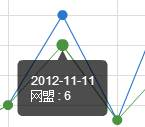 | 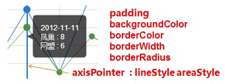 |
legend
legend, at most one legend is allowed in one chart. Try this »
| Property | Default | Description |
|---|---|---|
| {boolean} show | true | Specifies whether to show. Valid values are: true (show) | false (hide). |
| {number} zlevel | 0 | The first grade cascading control. Every zlevel will be allocated to a independent canvas, charts and components with the same zlevel will be rendered in the same canvas. The higher zlevel the closer to the top. More canvas dom will need more memory and performance, so never set too many zlevel. Most of the time, the second grade cascading control 'z' is recommended. |
| {number} z | 4 | The second grade cascading control, In the same canvas (zlevel), the higher z the closer to the top. |
| {string} orient | 'horizontal' | layout manner, defaults to horizontal. Valid values are: 'horizontal' | 'vertical'. |
| {string | number} x | 'center' | horizontal position. Defaults to center. Valid values are: 'center' | 'left' | 'right' | {number}}(x-coordinate, in px). |
| {string | number} y | 'top' | vertical position. Defaults to top. Valid values are: 'top' | 'bottom' | 'center' | {number}(y-coordinate, in px). |
| {color} backgroundColor | 'rgba(0,0,0,0)' | The color of the legend's background. Defaults to transparent. |
| {string} borderColor | '#ccc' | The color of the drawn border around the legend. |
| {number} borderWidth | 0 | The width of the drawn border around the legend, in px, defaults to 0 (no border). |
| {number | Array} padding | 5 | The inner padding of the legend, in px, defaults to 5. Can be set as array - [top, right, bottom, left], same as css, see image below. |
| {number} itemGap | 10 | The pixel gap between each item. Defaults to 10. It is horizontal in a legend with horizontal layout, and vertical in a legend with vertical layout. See image below. |
| {number} itemWidth | 20 | Legend shape's width. |
| {number} itemHeight | 14 | Legend shape's height. |
| {Object} textStyle | {color: '#333'} | We only set the default color of legend text, (see textStyle). If you want the legend text to take the color of the legend, you can set color to 'auto'. |
| {string | Function} formatter | null | text formatter: {string} (Template) | {Function}, template variable is '{name}', function paramater is name. |
| {boolean | string} selectedMode | true | selection mode. Enable legend switch by default. Can be one of: single, multiple |
| {Object} selected | null | The default selected state, can be used to conduct dynamic data loading with LEGEND.SELECTED event, try this » |
| {Array} data | [ ] | legend content array, the array items are usually {string}, each item represents a series name, auto line break in layout, but you can specify a '' for a new line break.
Use the value to index the chart type and itemStyle used by series with the same name in series. If fails, the item will be in not enabled state by default. If you need custom legend text style, you can change the array item to {Object}. With text style and custom icon, the format is: { name : {string}, textStyle : {Object}, icon : {string} } |

dataRange
dataRange, at most one dataRange control is allowed in one chart. Try this »
| Property | Default | Description |
|---|---|---|
| {boolean} show | true | Specifies whether to show. Valid values are: true (show) | false (hide). |
| {number} zlevel | 0 | The first grade cascading control. Every zlevel will be allocated to a independent canvas, charts and components with the same zlevel will be rendered in the same canvas. The higher zlevel the closer to the top. More canvas dom will need more memory and performance, so never set too many zlevel. Most of the time, the second grade cascading control 'z' is recommended. |
| {number} z | 4 | The second grade cascading control, In the same canvas (zlevel), the higher z the closer to the top. |
| {string} orient | 'vertical' | layout manner. Defaults to vertical. Valid values are: 'horizontal' | 'vertical' |
| {string | number} x | 'left' | horizontal position. Defaults to left. Valid values are: 'center' | 'left' | 'right' | {number}}(x-coordinate, in px). |
| {string | number} y | 'bottom' | vertical position. Defaults to bottom. Valid values are: 'top' | 'bottom' | 'center' | {number}(y-coordinate, in px). |
| {color} backgroundColor | 'rgba(0,0,0,0)' | The color of the dataRange's background. Defaults to transparent. |
| {string} borderColor | '#ccc' | The color of the drawn border around the dataRange. |
| {number} borderWidth | 0 | The width of the drawn border around the dataRange, in px, defaults to 0 (no border). |
| {number | Array} padding | 5 | The inner padding of the dataRange, in px, defaults to 5. Can be set as array - [top, right, bottom, left], same as css, see image below. |
| {number} itemGap | 10 | The pixel gap between each item. Defaults to 10. It is horizontal in the dataRange with horizontal layout, and vertical in the dataRange with vertical layout. See image below. |
| {number} itemWidth | 20 | The width of dataRange item. |
| {number} itemHeight | 14 | The width of dataRange item. |
| {number} min | null | The specified minimum value, such as 0. Defaults to null. Required parameter. Only when splitList is used, min can be ignored. |
| {number} max | null | The specified maximum value, such as 100. Defaults to null. Required parameter. Only when splitList is used, max can be ignored. |
| {number} precision | 0 | Decimal precision. Defaults to 0 (no decimal point). If the value of max - min is not divisible by splitNumber in the existing precision, the precision will be automatically increased for the sake of exact division. Inexact division is not supported. |
| {number} splitNumber | 5 | the number of segments. Defaults to 5. Linear gradient when set to 0. When calculable is true, it is equally split into 100 parts by default. |
| {Array.<Object>} splitList | null |
Customizing that how to split dataRange. When splitList is specified, splitNumber is ignored. splitList is an Array, which can not be empty. Each item of the Array is Object like: { start: 10 The start of the domain of this item. end: 30 The end of the domain of this item. 'start' and 'end' can be set to the same value, in which case this item is coresponding to the single value rather than an interval. label: '10 to 30' text label of this item. If ignoring this attribute, Text label will be auto generated. color: '#333' Color of this item. If ignoring attribute, color can be auto generated. } example: this 》 |
| {Object} range | null |
This option is used to set the initial selected range of dataRange. This option works when "calculable" is true. The value of this option likes: {start: 10, end: 50} |
| {boolean | string} selectedMode | true | selection mode. Enable dataRange switch by default. Can be one of: single, multiple |
| {boolean} calculable | false | Specifies whether the scale roaming feature will be enabled. When enabled, ignore splitNumber and splitList, dataRange shows as linear gradient. |
| {boolean} hoverLink | true | Hover link with the map. |
| {boolean} realtime | true | Specifies whether the scale roaming feature will be displayed in real time. Default to false (CAN NOT be changed) in the explorer which does't support canvas, such as IE6/7/8. |
| {Array} color | ['#1e90ff','#f0ffff'] | color list of the dataRange. Length of the color array must be > = 2. The color shows the change from high value to low value; that is, the low color array represents the high value color. Alpha ( rgba ) is supported. |
| {string | Function} formatter | null | content formatter：{string} (Template) | {Function}, the template's variables are {value}' and '{value2}', which stand for start value and end value. There are two function parameters, whose meanings are the same as template variables. One parameter '{value}' only when calculable is true. Try this » |
| {Array} text | null | text of the dataRange, when splitNumber is valid, defaults to the calculated value. You can specify a text array with the length of 2 to show the brief dataRange text, like ['high', 'low']. '\n' represents a line feed. |
| {Object} textStyle | {color: '#333'} | We only set the default color of dataRange text, (seetextStyle). |
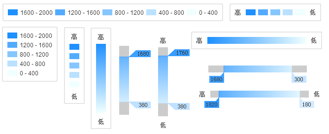
dataZoom
dataZoom. Synchronized with toolbox.feature.dataZoom. Applicable to Cartesian chart only. Try this »
| Property | Default | Description |
|---|---|---|
| {number} zlevel | 0 | The first grade cascading control. Every zlevel will be allocated to a independent canvas, charts and components with the same zlevel will be rendered in the same canvas. The higher zlevel the closer to the top. More canvas dom will need more memory and performance, so never set too many zlevel. Most of the time, the second grade cascading control 'z' is recommended. |
| {number} z | 4 | The second grade cascading control, In the same canvas (zlevel), the higher z the closer to the top. |
| {boolean} show | false | Specifies whether to show dataZoom. If true, take over all the series of data using specified category axis. If unspecified, take over all the Cartesian coordinate system data. |
| {string} orient | 'horizontal' | layout manner, defaults to horizontal. Valid values are: 'horizontal' | 'vertical'. |
| {number} x | adaptive | Horizontal placement. By default it is adapted according to the grid's parameters. Vertical layout is left by default, can be specified. {number} (the x-coordinate, in pixels, of the upper-left corner.) |
| {number} y | adaptive | Vertical placement. By default it is adapted according to the grid's parameters. Vertical layout is bottom by default, can be specified. {number} (the y-coordinate, in pixels, of the upper-left corner.) |
| {number} width | adaptive | 30 | Specifies width. In honrizontal layout, it is adapted according to the grid's parameters by default. In vertical layout, defaults to 30, can be specified. {number} (width, in px) |
| {number} height | adaptive | 30 | Specifies height. In vertical layout, it is adapted according to the grid's parameters by default. In honrizontal layout, defaults to 30, can be specified. {number} (height, in px) |
| {color} backgroundColor | 'rgba(0,0,0,0)' | The color of the background. Defaults to transparent. |
| {color} dataBackgroundColor | '#eee' | The color of the dataZoom's background. Only the first series would be rendered as data background. |
| {color} fillerColor | 'rgba(144,197,237,0.2)' | The fill color of the selected area. |
| {color} handleColor | 'rgba(70,130,180,0.8)' | The color of the control handle. |
| {number} handleSize | 8 | The size of the control handle. |
| {Array | number} xAxisIndex | null | If unspecified, it controls by default all the x-axes. You can use array to specify multiple x-axes Index that needs to be controlled, and number to specify one x-axis Index that needs to be controlled. |
| {Array | number} yAxisIndex | null | If unspecified, it controls by default all the y-axes. You can use array to specify multiple y-axes Index that needs to be controlled, and number to specify one y-axis Index that needs to be controlled. |
| {number} start | 0 | The start percent of dataZoom. Defaults to 0 (%), starts with the first data. |
| {number} end | 100 | The end percent of dataZoom. Defaults to 100 (%), ends with the last data. |
| {boolean} showDetail | true | Show detail when dragging. |
| {boolean} realtime | false | Specifies whether dataZoom will be displayed in real time. It is suggested to disable the realtime effect when your browser is slow or data sets are large and complex. Default to false (CAN NOT be changed) in the explorer which does't support canvas, such as IE6/7/8. |
| {boolean} zoomLock | false | DataZoom lock. Defaults to false. When set to true, the selected area cannot be zoomed, i.e. (end - start) value remains unchanged; only data roaming is applicable. |
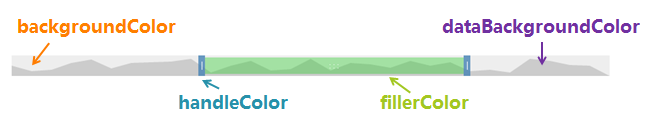
roamController
Zoom and roam controller for the map. try this »
| Property | Default | Description |
|---|---|---|
| {boolean} show | true | Specifies whether to show. Valid values are: true (show) | false (hide). |
| {number} zlevel | 0 | The first grade cascading control. Every zlevel will be allocated to a independent canvas, charts and components with the same zlevel will be rendered in the same canvas. The higher zlevel the closer to the top. More canvas dom will need more memory and performance, so never set too many zlevel. Most of the time, the second grade cascading control 'z' is recommended. |
| {number} z | 4 | The second grade cascading control, In the same canvas (zlevel), the higher z the closer to the top. |
| {string | number} x | 'left' | horizontal position. Defaults to left. Valid values are: 'center' | 'left' | 'right' | {number}(x-coordinate, in px). |
| {string | number} y | 'top' | vertical position. Defaults to top. Valid values are: 'top' | 'bottom' | 'center' | {number}(y-coordinate, in px). |
| {number} width | 80 | Specifies width which also define the size of the roam disk, can be {number}(in px) |
| {number} height | 120 | Specifies height of the whold controller boundary box, the zoom button would be placed at the bottom, can be {number}(in px) |
| {color} backgroundColor | 'rgba(0,0,0,0)' | The color of the background. Defaults to transparent. |
| {string} borderColor | '#ccc' | Color of the border. |
| {number} borderWidth | 0 | Width of the border. |
| {number | Array} padding | 5 | The inner padding, in px, defaults to 5. Can be set as array - [top, right, bottom, left], same as css, see image below. |
| {color} fillerColor | '#fff' | The fill color of the text in the controller. |
| {color} handleColor | '#6495ed' | The main color of the control handle. |
| {number} step | 15 | moving step of the 4 direction roam in px |
| {Object} mapTypeControl | null | Required. Specifies the mapType which should be under control, as: { china: true } You can specify every single mapType when multiple map in a chart at the same time, such as: { china: false, world: true} |
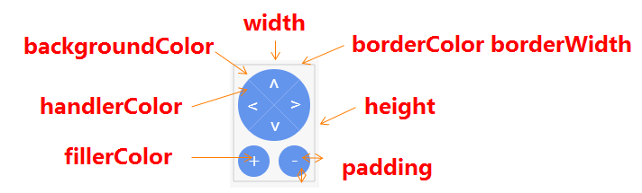
grid
A network of regularly spaced lines on a Cartesian coordinate system.
| Property | Default | Description |
|---|---|---|
| {number} zlevel | 0 | The first grade cascading control. Every zlevel will be allocated to a independent canvas, charts and components with the same zlevel will be rendered in the same canvas. The higher zlevel the closer to the top. More canvas dom will need more memory and performance, so never set too many zlevel. Most of the time, the second grade cascading control 'z' is recommended. |
| {number} z | 0 | The second grade cascading control, In the same canvas (zlevel), the higher z the closer to the top. |
| {number | string} x | 80 | Set abscissa on the upper left corner of the grid in px, or in percent (string) such as '50%' (horizontal center of the display area). |
| {number | string} y | 60 | Set ordinate on the upper left corner of the grid in px, or in percent (string). Defaults to null. The position varies with y2, such as '50%' (vertical center of the display area). |
| {number | string} x2 | 80 | Set abscissa on the lower right corner of the grid in px, or in percent (string) such as '50%' (horizontal center of the display area). |
| {number | string} y2 | 60 | Set ordinate on the lower right corner of the grid in px, or in percent (string) such as '50%' (vertical center of the display area). |
| {number} width | adaptive | Width of the grid (without axes), defaults to the total width - x - x2, in px, ignore x2 after specifying width. See the image below.
Can also be set in percent (string), such as '50%' (half the width of the display area). |
| {number} height | adaptive | Height of the grid (without axes), defaults to the total height - y - y2, in px, ignore y2 after specifying height. See the image below.
Can also be set in percent (string), such as '50%' (half the height of the display area). |
| {color} backgroundColor | 'rgba(0,0,0,0)' | Background color, defaults to transparent. |
| {number} borderWidth | 1 | Width of the border. |
| {color} borderColor | '#ccc' | Color of the border. |
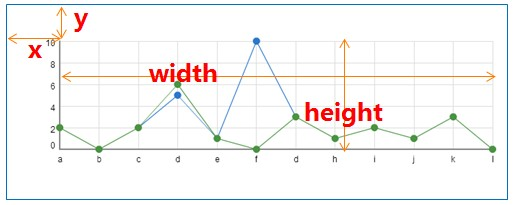
xAxis
The horizontal axis array in Cartesian coordinates. Each item in the array stands for a horizontal axis, and the array can be omitted if there is only one horizontal axis. In one chart, at most two horizontal axes are allowed. If there is only one x-axis, you can place it either at the bottom (by default) or at the top of the grid. If there are two x-axes, they shall be placed in opposition to each other. By default, the first x-axis is placed at the bottom of the grid, and the second at the top.
There are three types of coordinate axes: category axis, value axis and time axis (the differences are given in axis). For most chart types x-axis is category axis, but for bar chart x-axis is value axis, and for scatter chart both x-axis and y-axis are value axes. For specific parameters, see axis.
yAxis
The vertical axis array in Cartesian coordinates. Each item in the array stands for a vertical axis, and the array can be omitted if there is only one vertical axis. In one chart, at most two vertical axes are allowed. If there is only one y-axis, you can place it either on the left (by default) or on the right of the grid. If there are two y-axes, they shall be placed in opposition to each other. By default, the first y-axis is placed on the left of the grid, and the second on the right.
There are three types of coordinate axes: category axis, value axis and time axis (the differences are given in axis). For most chart types y-axis is value axis, but for bar chart y-axis is category axis. For specific parameters, see axis.
axis
There are three types of coordinate axes: category axis, value axis and time axis. Their differences are:
- category axis: specifies the category list. The only axis that the data is organized by.
- value axis: specifies the valid values. The only axis where the values are placed.
- time axis: use the same as value axis. The only difference is time axis treat the data as time (date) and auto formate the value into different time granularity along with different time span.
Here are the options for coordinate axes. Some options are applicable to category axis only, while others to value axis only. Please heed the type of application. Try this »
| Property | Default | Type of application | Description |
|---|---|---|---|
| {string} type | 'category' | 'value' | 'time' | 'log' | universal | type of the coordinate axis. By default, x-axis is 'category', y-axis is 'value'. |
| {boolean} show | true | universal | Specifies whether to show axis. Valid values are: true (show) | false (hide). |
| {number} zlevel | 0 | universal | The first grade cascading control. Every zlevel will be allocated to a independent canvas, charts and components with the same zlevel will be rendered in the same canvas. The higher zlevel the closer to the top. More canvas dom will need more memory and performance, so never set too many zlevel. Most of the time, the second grade cascading control 'z' is recommended. |
| {number} z | 0 | universal | The second grade cascading control, In the same canvas (zlevel), the higher z the closer to the top. |
| {string} position | 'bottom' | 'left' | universal | position of the coordinate axis. For x-axis ('category'), defaults to 'bottom'. For y-axis ('value'), defaults to 'left'. Valid values are: 'bottom' | 'top' | 'left' | 'right'. |
| {string} name | '' | value | time | name of the value axis. Defaults to null. |
| {string} nameLocation | 'end' | value | time | name location of the value axis. Defaults to 'end'. Valid values are: 'start' | 'end'. |
| {Object} nameTextStyle | {} | value | time | text style for the name of the value axis. Defaults to global options, takes the main color of axisLine. Can be specified. |
| {boolean} boundaryGap | true | category | blank border on each side of the cetegory axis. See image below. If true (by default), leaves it to blank; If false, extends to the edge of the grid. |
| {Array} boundaryGap | [0, 0] | value | time | blank border on each side of the axis. the value within the array represents percentage, [the difference between the original minimum value and the final minimum value, the difference between the original maximum value and the final maximum value]. |
| {number} min | null | value | time | The pecified minimum value, such as 0. Defaults to null. Further determined by specific values. Ignores boundaryGap[0] when specified. |
| {number} max | null | value | time | The pecified maximum value, such as 100. Defaults to null. Further determined by specific values. Ignores boundaryGap[1] when specified. |
| {boolean} scale | false | value | time | If false, the value axis must start with 0. If true, you can set the minimum and maximum value of value axis as the starting and ending value of your value axis. |
| {number} splitNumber | null | value | time | Number of segments, defaults to auto split along with the min/max. |
| {Object} logPositive | null | value | This option works when axis.type === 'log'. If set to false, negative value is supported. It is self-adapting by default, which means that if all of the data is negative, logPositive will be set to false, otherwise true. |
| {number} logLabelBase | null | value | This option works when axis.type === 'log'. If specified, axisLabel is drawn as exponent style. For example, when logLabelBase = 4, axisLabel is drawn like 4², 4³. If not specified, axisLabel is drawn like 1,000,000 as usual. |
| {Object} axisLine | varying | universal | Axis line. Default to show. See below. |
| {Object} axisTick | varying | universal | Axis tick. Defaults to hide. See below. |
| {Object} axisLabel | varying | universal | Axis text label. See below. |
| {Object} splitLine | varying | universal | Split line. Defaults to show. See below. |
| {Object} splitArea | varying | universal | Split area. Defaults to hide. See below. |
| {Array} data | [] | category axis | Category list, also label content, see axis.data. |
boundaryGap
| Configuration | boundaryGap: true | boundaryGap: false |
|---|---|---|
| Effects | 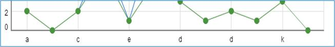 | 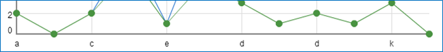 |
scale strategy
| Configuration | scale: false | scale: true |
|---|---|---|
| Effects | 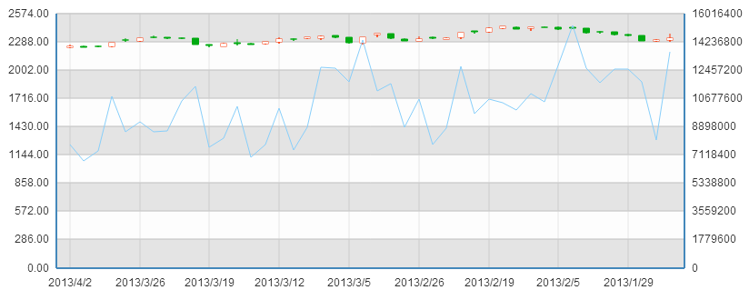 |
description of axis properties
axis.axisLine
axis line. Defaults to show. Default styles are listed below.
| Property | Default | Type of application | Description |
|---|---|---|---|
| {boolean} show | true | both | Specifies whether to show axisLine. Defaults to true, which is a prerequisite for the following properties. |
| {boolean} onZero | true | both | Locates to the coordinates whose vertical axis value is 0. |
| {Object} lineStyle | {
color: '#48b',
width: 2,
type: 'solid'
} |
both | controls the line style, (see lineStyle). |
axis.axisTick
axis tick. For value axis, defaults to hide. For category axis, defaults to show. Default styles are listed below.
| Property | Default | Type of application | Description |
|---|---|---|---|
| {boolean} show | false (value | time) true (category axis) |
universal | Specifies whether to show axisTick. Defaults to false. The following properties will be set by default values When it is true. |
| {string | number | function} interval | 'auto' | category axis | specifies the interval between axisTicks. Defaults to 'auto'. Valid values are:
'auto' (automatically hide those that cannot be displayed) | 0 (unhide all) | {number}(specified by the user). {function}callback, paramater is [index，data[index]], return true to show and false to hide |
| {boolean} onGap | null | category axis | Specifies whether the axisTick will be positioned at regular intervals. Defaults to boundaryGap. |
| {boolean} inside | false | universal | Specifies whether the axisTick will be displayed inside the grid. Defaults to outside. |
| {number} length | 5 | universal | controls the length of the line. |
| {Object} lineStyle | {
color: '#333',
width: 1
} |
both | controls the line style, (seelineStyle). |
axis.axisLabel
options for axis label
| Property | Default | Type of application | Description |
|---|---|---|---|
| {boolean} show | true | universal | Specifies whether to show axisLabel. Defaults to true, which is a prerequisite for the following properties. |
| {string | number | function} interval | 'auto' | category axis | specifies the interval between axisLabels. Defaults to 'auto'. Valid values are:
'auto' (automatically hide those that cannot be displayed) | 0 (unhide all) | {number}(specified by the user). {function}callback, paramater is [index，data[index]], return true to show and false to hide |
| {number} rotate | 0 | universal | The angle of rotation, defaults to 0 (not rotate). Positive value for counterclockwise rotation, negative value for clockwise rotation. Valid values are: -90 ~ 90. |
| {number} margin | 8 | universal | The pixel distance between the axisLabel and the axis.Defaults to 8. |
| {boolean} clickable | false | universal | Specifies whether the axisLabel is clickable. |
| {string | Function} formatter | null | universal | split name formatter: {string} (Template) | {Function} |
| {Object} textStyle | {
color: '#333'
} |
universal | text style (see textStyle). If the axis is value or time axis, color accepts method callback to achieve custom color definition, support #226 » |
split name formatter:
-
{string}, Template, its variables are:
- {value}: content or value
-
{Function}, pass in parameters and template varaibles:
- eg：function (value) {return ['Sunday', 'Monday', 'Tuesday', 'Wednesday', 'Thursday', 'Friday', 'Saturday'][value]; }
axis.splitLine
split line. Defaults to show. Default styles are listed below.
| Property | Default | Type of application | Description |
|---|---|---|---|
| {boolean} show | true | universal | Specifies whether to show splitLine. Defaults to true, which is a prerequisite for the following properties. |
| {boolean} onGap | null | category axis | Specifies whether the splitLine will be positioned at regular intervals. Equal to boundaryGap by default. |
| {Object} lineStyle | {
color: ['#ccc'],
width: 1,
type: 'solid'
} |
universal | controls the line style ,(see lineStyle). |
axis.splitArea
split area, defaults to hide:
| Property | Default | Type of application | Description |
|---|---|---|---|
| {boolean} show | false | universal | Specifies whether to show splitArea. Defaults to false. The following properties will be set by default values When it is true. |
| {boolean} onGap | null | category axis | Specifies whether the splitArea will be positioned at regular intervals. Defaults to boundaryGap. |
| {Object} areaStyle | {
color: [
'rgba(250,250,250,0.3)',
'rgba(200,200,200,0.3)'
]
} |
universal | the property "areaStyle" (see areaStyle), controls area style, the color array will be changed at intervals. |
axis.data
the array of category axis text label, specifies label content. The array items are usually tex. '\n' represents a line feed, for example:
['Jan', 'Feb', 'Mar', 'Apr', 'May', 'Jun', ..., 'Dec']
When you need to customize individual labels, the array can use objects to accept textStyle to set custom labels, such as:
[
'Jav', 'Feb', 'Mar',
{
value:'Apr', //Text content, if the split name formatter is specified, this value will be passed in as a template variable value or parameter.
textStyle:{ //see textStyle
color : 'red'
...
}
},
'May', '...'
]
polar
polar coordinates:
| Property | Default | Description |
|---|---|---|
| {number} zlevel | 0 | The first grade cascading control. Every zlevel will be allocated to a independent canvas, charts and components with the same zlevel will be rendered in the same canvas. The higher zlevel the closer to the top. More canvas dom will need more memory and performance, so never set too many zlevel. Most of the time, the second grade cascading control 'z' is recommended. |
| {number} z | 0 | The second grade cascading control, In the same canvas (zlevel), the higher z the closer to the top. |
| {Array} center | ['50%', '50%'] | coordinate of the center, in pixels or percent. The formula for calculating percent: min(width, height) * 50%. |
| {number} radius | '75%' | radius, in pixels or in percent. The formula for calculating percent: min(width, height) / 2 * 75%. |
| {number} startAngle | 90 | The start angle. Valid range is: [-180,180] |
| {number} splitNumber | 5 | the number of segments, defaults to 5 |
| {Object} name | {
show: true,
formatter: null,
textStyle: {
color:#333
}
} |
name of coordinate axis. |
| {Array} boundaryGap | [0, 0] | blank border on each side of the value axis. the value within the array represents percentage, [the difference between the original minimum value and the final minimum value, the difference between the original maximum value and the final maximum value]. |
| {boolean} scale | false | If false, the value axis must start with 0. If true, you can set the minimum and maximum value of value axis as the starting and ending value of your value axis. |
| {Object} axisLine | {show : true} | axis line. Defaults to show. The property "show" specifies whether to show axisLine or not. The property "lineStyle" (see lineStyle) controls line style for axisLine. |
| {Object} axisLabel | {show : false} | axis label, see axis.axisLabel. |
| {Object} splitLine | {show : true} | split line. Defaults to show. The property "show" specifies whether to show splitLine or not. The property "lineStyle" (see lineStyle) controls line style for splitLine. |
| {Object} splitArea | {show : true} | split area. Defaults to hide. The property "show" specifies whether to show splitArea or not. The property "areaStyle" (see areaStyle) controls area style for splitArea. |
| {String} type | 'polygon' | The shape of polar coordinates. Valid values are: 'polygon'|'circle'. |
| {Array} indicator | [] | radar indicator list, also label content, see the example below. |
indicator : [
{text : 'appearance'},
{text : 'photograph', min : 0},
{text : 'system', min : 0, max : 100},
{text : 'performance', axisLabel: {...}},
{text : 'screen'}
]
series (universal)
Here is the data array generated by data-driven chart. Each item in the array stands for a series' options and data. Some options are applicable to specific chart types only. Please note the type of application.
| Property | Default | Type of application | Description |
|---|---|---|---|
| {number} zlevel | 0 | universal | The first grade cascading control. Every zlevel will be allocated to a independent canvas, charts and components with the same zlevel will be rendered in the same canvas. The higher zlevel the closer to the top. More canvas dom will need more memory and performance, so never set too many zlevel. Most of the time, the second grade cascading control 'z' is recommended. |
| {number} z | 2 | universal | The second grade cascading control, In the same canvas (zlevel), the higher z the closer to the top. |
| {string} type | null | universal | chart type. Required parameter. If null or unsupported type, the data of this series will not be shown. Valid values are:
'line' | 'bar' | 'scatter' | 'candlestick' 'pie' | 'radar' | 'chord' | 'force' | 'map' |
| {string} name | null | universal | name of series. if the legend is enabled, the value will be indexed to legend.data. |
| {Object} tooltip | null | universal | style of the tooltip. Applicable to this series only. If unspecified, use option.tooltip (See tooltip), a small "hover box" with detailed information about the item being hovered over. |
| {boolean} clickable | true | universal | Specifies data graphic clickable or not, default to true, recommend to false when you do not have a click event handler. |
| {Object} itemStyle | null | universal | item style, (see itemStyle). |
| {Array} data | [] | universal | data, (seeseries.data). |
| {Array} markPoint | {} | universal | markPoint, (seeseries.markPoint). |
| {Array} markLine | {} | universal | markLine, (seeseries.markLine). |
series (Cartesian)
Here is the data array generated by data-driven chart. Each item in the array stands for a series' options and data. Some options are applicable to specific chart types only. Please note the type of application.
| Property | Default | Type of application | Description |
|---|---|---|---|
| {string} stack | null | line, column | name of the stack, USELESS in irregular line|bar. It is used in stacked charts with multiple groups of data. For example, stack:'group1' means to stack the values of the data whose stack value is 'group1' in the series array. |
| {number} xAxisIndex | 0 | line, column, scatter, candlestick | xAxis the index of the axis array. Specifies the horizontal axis that the data series uses. |
| {number} yAxisIndex | 0 | line, column, scatter, candlestick | yAxis the index of the axis array. Specifies the vertical axis that the data series uses. |
| {number | string} barGap | '30%' | column | the distance between each bar. Defaults to barWidth * 30%. Can also set to be a fixed value. |
| {number | string} barCategoryGap | '20%' | column | the distance between each bar cetegory. Defaults to barCategoryWidth * 20%. Can also set to be a fixed value. |
| {number} barMinHeight | 0 | column | The minimum height for the bar. Used to prevent tiny item values from affecting interaction. |
| {number} barWidth | adaptive | column, candlestick | the width of the bar/ candlestick. Adaptive when not specified. |
| {number} barMaxWidth | adaptive | bar, candlestick | the maximum width of the bar ( candlestick ). Adaptive when not specified. |
| {string} symbol | null | line, scatter | A predefined shape or symbol for the marker. The default symbol is automatically selected from (When all symbols are used, new symbols are pulled from the start again. Set it to'none' if you don't want to show the symbol): 'circle' | 'rectangle' | 'triangle' | 'diamond' | 'emptyCircle' | 'emptyRectangle' | 'emptyTriangle' | 'emptyDiamond' Other possible values are 'heart', 'droplet', 'pin', 'arrow' and 'star'. Although They are not included in the regular eight symbols above, you can use them at both series and data level. In addition, you can use 'star' + n (n>=3) to get N-pointed star, like 'star6' for six-pointed star. Since 1.3.5, ECharts added support for setting custom image as symbol. The URL to an image can be given on this form:'image://' + 'URL', such as 'image://../asset/ico/favicon.png'. See example 》 |
| {number | Array | Function} symbolSize | 2 | 4 | line (2), scatter(4) | size of the symbol. It is usually a number. But if you use an image as symbol. To prevent stretching of image caused by same width and height, you can use an array as symbolSize which first element is width and the second is height. When "calculable" is enabled, it's recommended to increase symbolSize for better interactive experience. When implementing a bubble chart, symbolSize should be a Function, and the bubble size depends on the return value of the method, the parameter passed in is the current data item (value array). |
| {number} symbolRotate | null | line, scatter | the angle by which the symbol is rotated. Valid range is: [-180,180] |
| {boolean} showAllSymbol | false | line | By default, a symbol will show only when its corresponding axis label does. set it to true if you need to show all the symbols. |
| {boolean} smooth | false | line | smoothed line, while smooth is true, lineStyle.type can not be dashed. |
| {boolean} dataFilter | 'nearst' | line | ECharts will optimize for the situation when data number is much larger than viewport width. It will filter the data showed in one pixel width. And this option is for data filtering strategy. Options: 'nearest', 'min', 'max', 'average'. |
| {boolean} large | false | Scatter | enables large scale scatter. |
| {number} largeThreshold | 2000 | Scatter | the threshold of large scale scatter anto-switch. Valid when set to true. |
| {boolean} legendHoverLink | true | line, bar, scatter | Enables legend hover link to the chart. |
series (pie)
Here is the data array generated by data-driven chart. Each item in the array stands for a series' options and data.
| Property | Default | Description |
|---|---|---|
| {Array} center | ['50%', '50%'] | coordinate of the center, in pixels or percent. The formula for calculating percent: min(width, height) * 50%. |
| {number | Array} radius | [0, '75%'] | radius, in pixels or in percent. The formula for calculating percent: min(width, height) / 2 * 75%. If the array [inner radius, outer radius] is passed in, it wil become a doughnut. |
| {number} startAngle | 90 | start angle, pie (90), gauge (225). Valid range is [-360,360]. |
| {number} minAngle | 0 | The minimum angle for the pie. Used to prevent tiny item values from affecting interaction. |
| {boolean} clockWise | true | Specifies whether it is displayed in clockwise direction. |
| {string} roseType | null | >Nightingale's rose diagram. 'radius' | 'area' |
| {number} selectedOffset | 10 | Offset of the sector when selected. |
| {boolean | string} selectedMode | null | selected mode. Defaults to false. Can be one of single, multiple. |
| {boolean} legendHoverLink | true | Enables legend hover link to the chart. |
series (radar)
Here is the data array generated by data-driven chart. Each item in the array stands for a series' options and data.
| Property | Default | Description |
|---|---|---|
| {number} polarIndex | 0 | polar coordinates index. |
| {string} symbol | null | same as series (Cartesian). |
| {number | Array | Function} symbolSize | 2 | same as series (Cartesian). |
| {number} symbolRotate | null | same as series (Cartesian). |
| {boolean} legendHoverLink | true | Enables legend hover link to the chart. |
series (map)
Here is the data array generated by data-driven chart. Each item in the array stands for a series' options and data.
| Property | Default | Description |
|---|---|---|
| {boolean | string} selectedMode | null | selected mode. Defaults to false. Can be one of single, multiple. |
| {string} mapType | 'china' | map type, including World Map, China Map, Map of China Provinces & Cities. For the mapType of China Provinces & Cities, just use simplified Chinese.
新疆, 西藏, 内蒙古, 青海, 四川, 黑龙江, 甘肃, 云南, 广西, 湖南, 陕西, 广东, 吉林, 河北, 湖北, 贵州, 山东, 江西, 河南, 辽宁, 山西, 安徽, 福建, 浙江, 江苏, 重庆, 宁夏, 海南, 台湾, 北京, 天津, 上海, 香港, 澳门' Supports sub-region mode, which develops sub-region maps from the main map types. The format is 'main map type | sub-region name', like 'world|Brazil', 'china|广东'. See example 》 |
| {boolean} hoverable | true | Non-numerical display (eg: only used to display markPoints and markLines). Set it to false to turn off regional hover highlight. |
| {boolean} dataRangeHoverLink | true | enables dataRange hover link to the chart |
| {Object} mapLocation | {x:'center',y:'center'} | Map location. x, y, width, height are configurable. Valid values for x and y are 'top', 'bottom', 'left', 'right', 'center', or absolute pixel value. Width and height can be set in pixel values. If any parameter is null, it will be adaptive in accordance with other parameters. |
| {string} mapValueCalculation | 'sum' | Calculation of map value. Defaults to sum. Valid values are: 'sum' | 'average' |
| {number} mapValuePrecision | 0 | Decimal precision of map value calculation. Valid when mapValueCalculation is set to average. Defaults to rounding.If decimal precision is needed, set an integer greater than 0. |
| {boolean} showLegendSymbol | true | Color of show legend symbol (small dots symbolizing different series). Valid when there is a legend. |
| {boolean | string} roam | false | Specifies whether the wheel zoom and drag roam will be enabled. Default to false (boolean), can be true (boolean) and 'scale' (string) for just enable the zoom(in/out), 'move' (string) for just enable the move. |
| {Object} scaleLimit | null | Controls the limit of wheel zoom. You can specify {max:number, min:number}, max is magnification coefficient, whose valid value should be greater than 1; min is reduction coefficient, whose valid value should be less than 1. |
| {Object} nameMap | null | name mapping of the custom region, like {'China' : '中国'}. |
| {Object} textFixed | null | fixed location of the name text of a region in px. When the value is positive, move to the lower left; When the value is negative, move to the upper right. Such as {'China' : [10, -10]}. |
| {Object} geoCoord | null | Specifies the location of the name text of a region by absolute latitude and longitude. For example, {'Islands':[113.95, 22.26]}: the name of Hong Kong's Islands District is located at 22.26°N and 113.95°E. |
| {Object} heatmap | null | Heatmap layer of map. Same with series (heatmap) |
series (heatmap)
Here is the data array generated by data-driven chart. Each item in the array stands for a series' options and data.
| Property | Default | Description |
|---|---|---|
| {number} blurSize | 30 | Blur size of a data point. |
| {Array} gradientColors | ['blue', 'cyan', 'lime', 'yellow', 'red'] | It could be an array of offset and color like [{ offset: 0.2, color: 'blue' }, { offset 0.8, color: 'cyan' }] or an array of color strings like ['blue', 'cyan', 'lime', 'yellow', 'red'], with which the color will transform evenly. |
| {number} minAlpha | 0.05 | If the unified value is less than minAlpha, it will be set to minAlpha to ensure small data value can also be visible on the chart. |
| {number} valueScale | 1 | All data values will multiply this value. |
| {number} opacity | 1 | Opacity of the heatmap. |
series (force)
Here is the data array generated by data-driven chart. Each item in the array stands for a series' options and data.
| Property | Default | Description | |||||||||||||||||||||
|---|---|---|---|---|---|---|---|---|---|---|---|---|---|---|---|---|---|---|---|---|---|---|---|
| {Array} categories | null | Categories of nodes in the force-directed chart, see categories | |||||||||||||||||||||
| {Array} nodes | [] | Node data in the force-directed chart. see nodes(data). Following are properties only in force graph.
|
|||||||||||||||||||||
| {Array} links | [] | link data in the force-directed chart. see links | |||||||||||||||||||||
| {Array} matrix | [] | Adjacency matrix. see matrix | |||||||||||||||||||||
| {Array} center | ['50%', '50%'] | center of the layout, in pixels or in percent. | |||||||||||||||||||||
| {number} size | 100% | size of the layout, in pixels or in percent. | |||||||||||||||||||||
| {number} minRadius | 10 | the minimum radius after the vertex data is mapped to the circle radius. | |||||||||||||||||||||
| {number} maxRadius | 20 | the maximum radius after the vertex data is mapped to the circle radius. | |||||||||||||||||||||
| {string} symbol | 'circle' | as series (Cartesian) | |||||||||||||||||||||
| {number | Array} symbolSize | size of the node. | ||||||||||||||||||||||
| {string} linkSymbol | 'none' | symbol of force's link. Can be specified as 'arrow', see symbolList. | |||||||||||||||||||||
| {Array} linkSymbolSize | [10, 15] | the size of force's link symbol. | |||||||||||||||||||||
| {number} scaling | 1 | layout scaling factor, not entirely accurate, achieves similar effect with the layout size. | |||||||||||||||||||||
| {number} gravity | 1 | centripetal force coefficient. The greater the coefficient, the closer the node is to the center. | |||||||||||||||||||||
| {boolean} draggable | true | specifies whether the node is draggable. | |||||||||||||||||||||
| {boolean} large | false | it is suggested that you set it to true on a chart with over 500 vertices, use Barnes-Hut simulation; meanwhile, open useWorker and increase the value of steps. | |||||||||||||||||||||
| {boolean} useWorker | false | specifies whether to put layout calculation into web worker when the browser supports web worker. | |||||||||||||||||||||
| {number} steps | 1 | the number of iterations of each frame layout calculation. Since it takes much more time to render each frame than layout, so when using web worker you can increase the value of steps to balance the two, so as to achieve optimum efficiency. | |||||||||||||||||||||
| {boolean | string} roam | false | Specifies whether the wheel zoom and drag roam will be enabled. Default to false (boolean), can be true (boolean) and 'scale' (string) for just enable the zoom(in/out), 'move' (string) for just enable the move. |
series (chord)
Here is the data array generated by data-driven chart. Each item in the array stands for a series' options and data.
| Property | Default | Description |
|---|---|---|
| {Array} categories | null | Categories of nodes in the chord chart, see categories |
| {Array} nodes | [] | Node data in the chord chart. see nodes(data) |
| {Array} links | [] | link data in the chord chart. see links |
| {Array} matrix | [] | Adjacency matrix. see matrix |
| {boolean} ribbonType | true | Chord with ribbon type is drawed with sector and ribbon shapes. Each ribbon can represent the weight of edge with the size of two ends. Chord without ribbon type is drawed with symbols and bezier curves. Which can't represent edge weight. |
| {string} symbol | 'circle' | see series(Cartesion), Only available if ribbonType is false |
| {number} symbolSize | Size of symbol, Only available if ribbonType is false | |
| {number} minRadius | 10 | Minimum radius after mapping to symbol size . Only available if ribbonType is false |
| {number} maxRadius | 20 | Maximum radius after mapping to symbol size, . Only available if ribbonType is true |
| {boolean} showScale | false | Specifies whether the scale will be showed. Only available if ribbonType is true |
| {boolean} showScaleText | false | Specifies whether the scale text will be showed. Only available if ribbonType is true |
| {number} padding | 2 | the distance between each sector (in degrees). |
| {string} sort | 'none' | Data sorting. Can be one of none, ascending, descending. |
| {string} sortSub | 'none' | Data sorting (chord). Can be one of none, ascending, descending. |
| {boolean} clockWise | false | Specifies whether it is displayed in clockwise direction. |
series (gauge)
Here is the data array generated by data-driven chart. Each item in the array stands for a series' options and data.
| Property | Default | Description |
|---|---|---|
| {Array} center | ['50%', '50%'] | coordinate of the center, in pixels or percent. The formula for calculating percent: min(width, height) * 50%. |
| {number | Array} radius | [0, '75%'] | radius, in pixels or in percent. The formula for calculating percent: min(width, height) / 2 * 75%.
If the array [inner radius, outer radius] is passed in, it wil become a doughnut. |
| {number} startAngle | 225 | start angle, pie (90), gauge (225). Valid range is: [-360,360] |
| {number} endAngle | -45 | end angle. Valid range is: [-360,360], ensure that startAngle - endAngle is positive. |
| {number} min | 0 | The specified minimum value. |
| {number} max | 100 | The specified maximum value. |
| {number} splitNumber | 10 | The number of segments. Defaults to 10. |
| {Object} axisLine | {
show: true,
lineStyle: {
color: [
[0.2, '#228b22'],
[0.8, '#48b'],
[1, '#ff4500']
],
width: 30
}
} |
axis line. Defaults to show.
The property "show" specifies whether to show axisLine or not. The property "lineStyle" (see lineStyle) controls line style for axisLine. What makes this particular lineStyle.color different is that it is a two-dimensional array that can be used to divide the gauge axis into several parts, and designate a specific color to each part on this form: [[percent, color value], [...]]. |
| {Object} axisTick | {
show: true,
splitNumber: 5,
length :8,
lineStyle: {
color: '#eee',
width: 1,
type: 'solid'
}
} |
axis tick. Defaults to hide.
The property "show" specifies whether to show axisTick or not; The property "lineStyle"(see lineStyle) controls line style for axisTick; The property "splitNumber" controls the number of segments; The property "length" controls line length for axisTick. |
| {Object} axisLabel | {
show: true,
formatter: null,
textStyle: {
color: 'auto'
}
} |
axis label, (see axis.axislabel).
The property "formatter" controls axisLabel formatting; The property "textStyle" (see textStyle) controls text style for axisLabel. |
| {Object} splitLine | {
show: true,
length :30,
lineStyle: {
color: '#eee',
width: 2,
type: 'solid'
}
} |
split line. Defaults to show.
The property "show" specifies whether to show splitLine or not. The property "length" controls line length for splitLine. The property "lineStyle" (see lineStyle) controls line style for splitLine. |
| {Object} pointer | {
length : '80%',
width : 8,
color : 'auto'
} |
pointer style
The property "length" controls line length for pointer. If in percent, it is relative to the outer radius of the gauge. The property "width" controls the widest point of the pointer. The property "color" controls the color of the pointer. |
| {Object} title | {
show : true,
offsetCenter: [0, '-40%'],
textStyle: {
color: '#333',
fontSize : 15
}
} |
gauge title
The property "show" specifies whether to show gauge title or not. The property "offsetCenter" is used to locate title. Offset to the center coordinates if the array is x-axis. If in percent, it is relative to the outer radius of the gauge. The property "lineStyle" (see textStyle) controls line style for gauge title. |
| {Object} detail | {
show : true,
backgroundColor: 'rgba(0,0,0,0)',
borderWidth: 0,
borderColor: '#ccc',
width: 100,
height: 40,
offsetCenter: [0, '40%'],
formatter: null,
textStyle: {
color: 'auto',
fontSize : 30
}
} |
gauge detail
The property "show" specifies whether to show detail or not. The property "backgroundColor" controls the background color of the detail. The property "borderWidth" controls the width of border around the detail. The property "borderColor" controls the color of border around the detail. The property "width" controls the width of the detail. The property "height" controls the height of the detail. The property "offsetCenter" is used to locate title. Offset to the center coordinates if the array is x-axis. If in percent, it is relative to the outer radius of the gauge; The property "formatter" controls tooltip formatting; The property "lineStyle" (see textStyle) controls line style for tooltip. |
| {boolean} legendHoverLink | true | Enables legend hover link to the chart. |
series (funnel)
Here is the data array generated by data-driven chart. Each item in the array stands for a series' options and data.
| Property | Default | Description |
|---|---|---|
| {number | string} x | 80 | Abscissa on the upper left corner of the grid. In px, or in percent (string) such as '50%' (horizontal center of the display area). |
| {number | string} y | 60 | Ordinate on the upper left corner of the grid. In px, or in percent (string) such as '50%' (vertical center of the display area). |
| {number | string} x2 | 80 | Abscissa on the lower right corner of the grid. In px, or in percent (string) such as '50%' (horizontal center of the display area). |
| {number | string} y2 | 60 | Ordinate on the lower right corner of the grid. In px, or in percent (string) such as '50%' (vertical center of the display area). |
| {number | string} width | null | The total width, defaults to the drawing area's total width - x - x2, in px, ignore x2 after specifying height. Can also be set in percent (string), such as '50%' (half the width of the display area). |
| {number | string} height | null | The total height, defaults to the drawing area's total height - y - y2, in px, ignore y2 after specifying height. Can also be set in percent (string), such as '50%' (half the height of the display area). |
| {string} funnelAlign | 'center' | Horizontal layout style, default to 'center', other option can be: 'left' | 'right' | 'center' |
| {number} min | 0 | The specified minimum value. |
| {number} max | 100 | The specified maximum value. |
| {string} minSize | '0%' | The proportion of the minimum value 'min' to the total width. If the symbol of required min is not sharp triangle, you can set minSize to achieve it. |
| {string} maxSize | '100%' | The proportion of the maximum value 'max' to the total width. |
| {string} sort | 'descending' | Data sorting, can be one of ascending, descending |
| {number} gap | 0 | The distance between data symbols. |
| {boolean} legendHoverLink | true | Enables legend hover link to the chart. |
series ( eventRiver )
Here is the data array generated by data-driven chart. Each item in the array stands for a series' options and data.
| Property | Default | Description | ||||||||||||||||||||||||||||
|---|---|---|---|---|---|---|---|---|---|---|---|---|---|---|---|---|---|---|---|---|---|---|---|---|---|---|---|---|---|---|
| {number} xAxisIndex | 0 | xAxis the index of the axis array. Specifies the horizontal axis that the data series uses. | ||||||||||||||||||||||||||||
| {number} weight | 1 | Specifies the weight of this event's series. | ||||||||||||||||||||||||||||
| {Array} data | [] | Event list, every item in the array is an object {}, as:
|
||||||||||||||||||||||||||||
| {boolean} legendHoverLink | true | Enables legend hover link to the chart. |
series ( treemap )
Here is the data array generated by data-driven chart. Each item in the array stands for a series' options and data.
| Property | Default | Description | |||||||||||||||||||||
|---|---|---|---|---|---|---|---|---|---|---|---|---|---|---|---|---|---|---|---|---|---|---|---|
| {Array} center | ['50%', '50%'] | coordinate of the center, in pixels or percent. | |||||||||||||||||||||
| {Array} size | ['80%', '80%'] | size of the chart, in pixels or percent. | |||||||||||||||||||||
| {string} root | '' | Name of root node | |||||||||||||||||||||
| {Object} itemStyle | {} | see itemStyle
peculiar properties of treemap
|
|||||||||||||||||||||
| {Array} data | [] | data list, every item in the array is an object {}, as:
|
series（tree）
Here is the data array generated by data-driven chart. Each item in the array stands for a series' options and data.
| Property | Default | Description | |||||||||||||||||||||
|---|---|---|---|---|---|---|---|---|---|---|---|---|---|---|---|---|---|---|---|---|---|---|---|
| {Object} rootLocation | varying | coordinate of the location of the root, in pixels, percent or keywords.
{
x: 'center' | 'left' | 'right' | 'x%' | {number},
y: 'center' | 'top' | 'bottom' | 'y%' | {number}
}
|
|||||||||||||||||||||
| {number} layerPadding | 100 | padding of layers | |||||||||||||||||||||
| {number} nodePadding | 30 | padding of brothers | |||||||||||||||||||||
| {string} orient | 'vertical' | direction of the tree, 'vertical' | 'horizontal' | 'radial' | |||||||||||||||||||||
| {string} direction | '' | to inverse the direction of the tree, can be: 'inverse' | |||||||||||||||||||||
| {boolean | string} roam | false | Specifies whether the wheel zoom and drag roam will be enabled. Default to false (boolean), can be true (boolean) and 'scale' (string) for just enable the zoom(in/out), 'move' (string) for just enable the move. | |||||||||||||||||||||
| {string} symbol | 'circle' | see series (Cartesian) | |||||||||||||||||||||
| {number|Array} symbolSize | 20 | size of nodes | |||||||||||||||||||||
| {Object} itemStyle | {} | 参见itemStyle | |||||||||||||||||||||
| {Array} data | [] | only one item，is Object {}，has properties：
|
series (venn)
Here is the data array generated by data-driven chart. Each item in the array stands for a series' options and data.
| Property | Default | Description | ||||||||||||
|---|---|---|---|---|---|---|---|---|---|---|---|---|---|---|
| {Object} itemStyle | {} | see itemStyle | ||||||||||||
| {Array} data | [] | data list, contains 3 items, the first and second represent two collections, the third one is the intersection. Every item in the array is an object {}, as:
|
series（wordCloud）
Here is the data array generated by data-driven chart. Each item in the array stands for a series' options and data.
| Property | Default | Description |
|---|---|---|
| {Array} center | ['50%', '50%'] |
Center of the word cloud. Can be relatively percent or absolutely pixel. |
| {Array} size | ['40%', '40%'] |
Center of the word cloud. Can be relatively percent or absolutely pixel. |
| {Array} textRotation | [0, 90] |
List of optional text rotation. In default it has two options: horizontal(0) and vertical(90). |
| {Object} autoSize |
{
enable: true,
minSize: 12
} |
If enable text size auto calculation. It is recommand to enable to have a better result. |
| {Object} itemStyle | {} | 参见itemStyle |
series.data
Data array in the series. In line and column, length of the array is equal to the length of category axis text label array axis.data, and there is one-to-one correspondence between them. The array item is usually value, such as:
[12, 34, 56, ..., 10, 23]
When the data corresponding to a category does not exist (ps: 'no data' is not equal to 0), you can use '-' to indicate 'no data'. In line, 'no data' is showed by a breakpoint; in column, 'no data' is showed by a missing column, such as:
[12, '-', 56, ..., 10, 23]
When you need to customize individual contents, array items can use objects, such as:
[
12, 34,
{
value : 56,
tooltip:{}, //custom tooltip，applicable to the item only, see tooltip
itemStyle:{} //custom itemStyle=，applicable to the item only, see itemStyle
},
..., 10, 23
]
In scatter & bubble, value configuration is quite special. Both its x-axis and y-axis can be value axis, and you need to specify bubble size in the bubble chart. Hence the configuration for scatter:
[
{
value : [10, 25, 5] //[xValue, yValue, rValue] (x-axis value, y-axis value, size(optional))
},
[12, 15, 1]
...
]
In candlestick, value configuration is quite special. Its value content is an array with the length of 4, which respectively represents [opening price, closing price, the minimum value, the maximum value]
[
{
value : [2190.1, 2148.35, 2126.22, 2190.1] // opening price, closing price, the minimum value, the maximum value
},
[2242.26, 2210.9, 2205.07, 2250.63],
...
]
In pie, you need to specify the name for each part of data. Selected mode can be set. Hence the configuration:
[
{
value : 12，
name : 'apple' //the name for each part of data
},
...
]
In map, you need to specify the province for each part of data. Selected mode can be set. Hence the configuration:
[
{
name: '北京',
value: 1234,
selected: true
},
{
name: '天津',
value: 321
},
...
]
series.markPoint
markPoint in the series
| Property | Default | Description |
|---|---|---|
| {boolean} clickable | true | Specifies data graphic clickable or not, default to true, recommend to false when you do not have a click event handler. |
| {string} symbol | 'pin' | the symbol of markPoint, same as series' symbol. |
| {number | Array | Function} symbolSize | 10 | the size of markPoint symbol, same as series' symbolSize. |
| {number} symbolRotate | null | the angle by which markPoint symbol rotates, same as series' symbolRotate. |
| {boolean} large | false | Specifies whether the large scale markPoint mode will be enabled. |
| {Object} effect | {
show: false,
type: 'scale',
loop: true,
period: 15,
scaleSize : 2,
bounceDistance: 10,
color : null,
shadowColor : null,
shadowBlur : 0
} |
glow effect for markPoint symbol:
show: specifies whether to show glow effect or not. Defaults to false. type effect type, default to 'scale', can be 'bounce'. loop: specifies whether to play the animation in a loop. Defaults to true. period: animation period. No units. The larger the value, the slower. Defaults to 15. scaleSize: magnification. Based on markPoint symbolSize, available when type is scale. bounceDistance bouncing distance, in px, available when type is bounce. color: color of the glow. The default value is pulled from the markPoint itemStyle array. shadowColor: color of the shadow. The default value is pulled from the color array. shadowBlur: blur degree of shadow. Defaults to 0. Baidu Migration (Simulation) » |
| {Object} itemStyle | {...} | style for markPoint symbol, same as series' itemStyle. |
| {Array} data | [] | data of markPoint symbol, see below. |
series.markPoint.data
markPoint data array. The most direct data items can directly specify markPoint position (x, y) and the relevant name and value. It's basically like this in pie, radar, force, and chord:
data : [
{name: 'markPoint1', value: 100, x: 50, y: 20},
{name: 'markPoint2', value: 200, x: 150, y: 120},
...
]
In Cartesian charts like line, bar, candlestick, and scatter, directly specifying the location is not the only choice you've got. If you want to locate markPoint by Cartesian system, you can make it via xAxis, yAxis. These two values will, in accordance with the specific axis type and parameters passed in, make automatic convertions as follows:
data : [
{name: 'markPoint1', value: 100, xAxis: 1, yAxis: 20}, // When xAxis is the category axis, value 1 will be understood as the index of the category axis.
{name: 'markPoint2', value: 100, xAxis: 'Wednesday', yAxis: 20}, // When xAxis is the category axis, String 'Wednesday' will be understood as matching the category axis text.
{name: 'markPoint3', value: 200, xAxis: 10, yAxis: 20}, // When xAxis/yAxis is the value axis, whatever passed in will be understood as a value and be conversed to location.
...
]
And the most practical bit is, in line, bar and scatter, you can directly use the following off-the-shelf special points as markPoints:
data : [
{type : 'max', name: 'custom name'}, // the maximum value
{type : 'min', name: 'custom name'} // the minimum value
]
markPoints are quite special and yet most commonly used in maps. In addition to direct location, if you want it to be based on geographic coordinates, and zoom with the map's scale roaming, you need to provide a geoCoord for markPoint, as follows.
data : [
{name: '北京', value: 100},
{name: '上海', value: 200},
...
],
geoCoord : {
"北京":[116.46,39.92], // Supports array [longitude, latitude]
"上海": {x: 121.48, y: 31.22}, // Supports object {x: longitude, y: latitude}
...
}
series.markLine
markLine in the series
| Property | Default | Description |
|---|---|---|
| {boolean} clickable | true | Specifies data graphic clickable or not, default to true, recommend to false when you do not have a click event handler. |
| {Array | string} symbol | ['circle', 'arrow'] | symbols of the start and end of markLine. If the two are the same, string can be directly passed in. Same as series' symbol. |
| {Array | number | Function} symbolSize | [2, 4] | sizes of the start and end symbols of markLine. Half-width (radius) parameters. If the two are the same, number or function can be directly passed in. Same as series' symbolSize. |
| {Array | number} symbolRotate | null | angles by which the start and end markLine symbols rotate, same as series' symbolRotate. |
| boolean large | false |
If enable optimization for large scale markline. Large scale means line number >= 2k.
Optimization will batch lines drawing. Lines of series will force to have same style. And symbols of two end of line will be ignore. |
| {boolean} smooth | false | smoothed line, while smooth is true, lineStyle.type can not be dashed. |
| {number} smoothness | 0.2 | Line smoothness. Only available when smooth is true |
| {number} precision | 2 | precision, use for the average markLine. |
| {Object} bundling |
{
enable: false,
maxTurningAngle: 45
}
|
Edge Bundling
enable: If enable edge bundling. maxTurningAngle: Max turning angle of bundled edge, ranges from 0 degree to 90 degree. Tip：Edge bundling use algorithm from "Multilevel Agglomerative Edge Bundling for Visualizing Large Graphs" |
| {Object} effect | {
show: false,
loop: true,
period: 15,
scaleSize : 2,
color : null,
shadowColor : null,
shadowBlur : null
} |
glow effect for markLine symbol:
show: specifies whether to show. Defaults to false. loop: specifies whether to play the animation in a loop. Defaults to true. period: animation period. No units. The larger the value, the slower. Defaults to 15. scaleSize: magnification. Based on markLine lineWidth. color: color of the glow. The default value is pulled from the markLine itemStyle array. shadowColor: color of the shadow. The default value is pulled from the color array. shadowBlur: blur degree of shadow. The default value is based on scaleSize. Baidu Migration (Simulation) » |
| {Object} itemStyle | {...} | style for markLine symbol, same as series' itemStyle |
| {Array} data | [] | data of markLine symbol, see below. |
series.markLine.data
markLine data array. The most direct data items can directly specify the start and end position of markLine (x, y) and its relevant name and value. It's basically like this in pie, radar, force and chord:
data : [
[
{name: 'start of markLine1', value: 100, x: 50, y: 20},
{name: 'end of markLine1', x: 150, y: 120}
],
[
{name: 'start of markLine2', value: 200, x: 30, y: 80},
{name: 'end of markLine2', x: 270, y: 190}
],
...
]
In Cartesian charts like line, bar, candlestick and scatter, directly specifying the location is not the only choice you've got. If you want to locate markLine by Cartesian system, you can make it via xAxis, yAxis. These two values will, in accordance with the specific axis type and parameters passed in, make automatic convertions as follows:
data : [
[
{name: 'start of markLine1', value: 100, xAxis: 1, yAxis: 20}, // When xAxis is the category axis, value 1 will be understood as the index of the category axis. By xAxis: -1 | MAXNUMBER, markLine can reach the edge of the grid.
{name: 'end of markLine1', xAxis: 'Wednesday', yAxis: 20}, // When xAxis is the category axis, String 'Wednesday' will be understood as matching the category axis text.
],
[
{name: 'start of markLine2', value: 200, xAxis: 10, yAxis: 20}, // When xAxis/yAxis is the value axis, whatever passed in will be understood as a value and be conversed to location.
{name: 'end of markLine2', xAxis: 270, yAxis: 190}
],
...
]
And the most practical bit is, in line, bar and scatter, you can directly use the following off-the-shelf special lines as markLines:
data : [
{type : 'max', name: 'custom name'}, // horizontal or vertical line of the maximum value
{type : 'min', name: 'custom name'}, // horizontal or vertical line of the minimum value
{type : 'average', name: 'custom name'},// horizontal or vertical line of the average value
// the line from minimum value to maximum value
[
{type : 'min', name: 'custom name'},
{type : 'max', name: 'custom name'}
],
// in scatter, there are two value axes. By default the special point is calculated through the y-axis value, you can specify x-axis special point via Index: 0.
{type : 'max', name: 'custom name', valueIndex:0}
]
markLines are quite special and yet most commonly used in maps. In addition to direct location, if you want it to be based on geographic coordinates, and zoom with the map's scale roaming, you need to provide a geoCoord for markLine, as follows.
data : [
[
{name: '北京', value: 100},
{name:'上海'}
],
[
{name: '北京', value: 100},
{name:'广州'}
],
...
],
geoCoord : {
"北京":[116.46,39.92], // Supports array [longitude, latitude]
"广州":[113.23,23.16],
"上海": {x: 121.48, y: 31.22}, // Supports object {x: longitude, y: latitude}
...
}
itemStyle
shape style for items. Sets the default style and emphsis style (style when hovered)for items in the chart:
itemStyle: {
normal: {
...
},
emphasis: {
...
}
}
the normal property and emphasis property are objects. They include:
| Property | Default | Type of application | Description |
|---|---|---|---|
| {color | Function} color | varying according to chart types | universal | color, dominant color, function paramater is {seriesIndex:x, series:xxx, dataIndex:y, data:yyy} |
| {Object} lineStyle | varying according to chart types | line, candlestick, markLine | line style, see lineStyle. |
| {Object} areaStyle | varying according to chart types | stacked line, map | area style, see areaStyle. |
| {Object} chordStyle | varying according to chart types | chord | chord style, see chordStyle. |
| {Object} nodeStyle | varying according to chart types | force | node style, see nodeStyle. |
| {Object} linkStyle | varying according to chart types | force | link style, see linkStyle. |
| {string} borderColor | varying | line (symbol), scatter (symbole), pie, map, markPoint | color of border. |
| {number} borderWidth | varying | line (symbol), scatter (symbole), pie, map, markPoint | width of column border, in px. |
| {string} barBorderColor | '#fff' | bar (column) | color of border. |
| {number | Array} barBorderRadius | 0 | bar (column) | radius of bar (column) border, in px, defaults to 0. can be Array to assign a radius to the 4 corners, such as [5, 5, 0, 0](clockwise as left-top, right-top, right-bottom, left-bottom) |
| {number} barBorderWidth | 0 | bar (column) | width of bar (column) border, in px, defaults to 0. |
| {Object} label | {
show: true,
position:'outer'
} |
line, column, candlestick, scatter, pie, map, force, markPoint, markLine | In pie, displayed on the outside by default. labelLine.length controls the label's distance from the pie.
In funnel, displayed on the right by default. labelLine.length controls the label's distance from the funnel. In map, the location of labels cannot be specified. position can be specified in line, column, candlestick, scatter. See below. |
| {Object} labelLine | {show: true} | pie, funnel | the visual guide of labels in pie. Defaults to show. |
label property is the object. It includes:
| Property | Default | Description |
|---|---|---|
| {boolean} show | true | Specifies whether to show label. Valid values are: true (show) | false (hide). |
| {string} position | 'outer' | null | the position to show label. Cannot be specified in maps.
In pie, valid values are: 'outer' | 'inner'; In funnel, valid value are: 'inner' | 'left' | 'right' (default)， In line, column, candlestick and scatter, the default value is 'top' (for vertical layout) or 'right' (for horizontal layout). Can also be one of: 'inside' | 'left' | 'bottom'; In column, other possible values are: 'insideLeft' | 'insideRight' | 'insideTop' | 'insideBottom'. |
| {boolean} rotate | false | applicable to chord. Label rotates automatically. |
| {number} distance | 10 | In chord, Label's distance from chord after it rotates automatically.
In pie, this distance means the factor of label distance and pie radius(In ring chart, is sum of inner and outer radius), default to 0.5. |
| {string | Function} formatter | null | label text formatter, universal, same as Tooltip.formatter, Supports template, method callback. Does not support asynchronous callback. |
| {Object} textStyle | null | style for label text, (see textStyle). |
| {Number} x | varying | only in treemap，x-coordinate in px of text |
| {Number} y | varying | only in treemap，y-coordinate in px of text |
labelLine property is the object. It includes:
| Property | Default | Description |
|---|---|---|
| {boolean} show | true | Specifies whether to show labelLine. Valid values are: true (show) | false (hide). |
| {number} length | 40 | length of the line. Starts from the outer edge. Can be negative. In funnel, length can be 'auto' |
| {Object} lineStyle | varying | line style, see lineStyle. |
By effectively setting the normal and emphasis options of itemStyle, you can personalize your display strategies. For example, if you want to have text labels in pie hidden by default, and a red visual guide displayed in the outer region of the pie when the mouse hovers over, you can try the following configuration:
itemStyle: {
normal: {
label: {
show: false
}
labelLine: {
show: false
}
} ,
emphasis: {
label: {
show: true,
position: 'outer'
}
labelLine: {
show: true,
lineStyle: {
color: 'red'
}
}
}
}
high customizability:
line try this », column try this », candlestick try this », scatter try this », pie try this »， chord try this », force try this », map try this », gauge try this », funnel try this »
lineStyle
style for line (line segment)
| Property | Default | Description |
|---|---|---|
| {color} color | varying | color |
| {string} type | 'solid' | line style. Valid values are: 'solid' | 'dotted' | 'dashed', and can be 'curve' | 'broken' in tree structures. |
| {number} width | varying | width of the line. |
| {color=} shadowColor | rgba(0,0,0,0) | applicable to the main line (in IE8+). Color of the shadow. Supports rgba. |
| {number=} shadowBlur | 5 | applicable to the main line (in IE8+). Blur degree of the shadow. Valid values are positive. |
| {number=} shadowOffsetX | 3 | applicable to the main line (in IE8+). Horizontal offset of the shadow. Right when positive, left when negative. |
| {number=} shadowOffsetY | 3 | applicable to the main line (in IE8+). Vertical offset of the shadow. Down when positive, up when negative. |
areaStyle
fill style for area
| Property | Default | Description |
|---|---|---|
| {color} color | varying | color |
| {string} type | 'default' | Fill style, currently only supports 'default' (solid fill). |
chordStyle
chord style for the chord chart
| Property | Default | Description |
|---|---|---|
| {number} width | 1 | Width of bezier curve, Only available when ribbonType is false |
| {string} color | 1 | Color of bezier curve, Only available when ribbonType is false |
| {string} borderWidth | 1 | Border width of ribbon shape, Only available when ribbonType is true |
| {string} borderColor | 1 | Border color of ribbon shape, Only available when ribbonType is true |
nodeStyle
node style for the force-directed chart
| Property | Default | Description |
|---|---|---|
| {color} color | '#f08c2e' | fill color. |
| {color} borderColor | '#5182ab' | stroke color. |
| {number} borderWidth | 1 | width of the stroke line. |
linkStyle
link style for the force-directed chart
| Property | Default | Description |
|---|---|---|
| {string} type | 'line' | line style, can be: 'curve' | 'line' |
| {color} color | '#5182ab' | color of the line |
| {number} width | 1 | width of the line |
textStyle
text style
| Property | Default | Description |
|---|---|---|
| {color} color | varying | color |
| {string} decoration | 'none' | decoration. Applicable to tooltip.textStyle only. |
| {string} align | varying | horizontal alignment. Valid values are: 'left' | 'right' | 'center'. |
| {string} baseline | varying | vertical alignment. Valid values are: 'top' | 'bottom' | 'middle'. |
| {string} fontFamily | 'Arial, Verdana, sans-serif' | font family. |
| {number} fontSize | 12 | font size, in px. |
| {string} fontStyle | 'normal' | font style. Valid values are: 'normal' | 'italic' | 'oblique'. |
| {string | number} fontWeight | 'normal' | font weight. Valid values are: 'normal' | 'bold' | 'bolder' | 'lighter' | 100 | 200 |... | 900. |
loadingOption
The loading options control the appearance of the loading screen that covers the plot area on chart operations. Try this »
| Property | Default | Description |
|---|---|---|
| {string} text | '数据读取中...' | The loading text that appears when the chart is set into the loading state. \n' represents a line feed. |
| {string | number} x | 'center' | horizontal position. Defaults to center. Valid values are: 'center' | 'left' | 'right' | {number}(x-coordinate, in px). |
| {string | number} y | 'center' | vertical position. Defaults to center. Valid values are: 'center' | 'bottom' | 'top' | {number}(y-coordinate, in px). |
| {Object} textStyle | null | style for the loading text, (see textStyle). |
| {string | Function} effect | 'spin' | loading effect. Valid values are: 'spin' | 'bar' | 'ring' | 'whirling' | 'dynamicLine' | 'bubble'. Supports external loading. |
| {Object} effectOption | null | option for loading effect, see zrender. |
| {number} progress | null | Specifies the current progress [0~1]. Applicable to specific effects. |
noDataLoadingOption
The loading options for none data control the appearance of the loading screen that covers the plot area on chart operations. Try this »
| Property | Default | Description |
|---|---|---|
| {string} text | '暂无数据' | The loading text that appears when the chart is set into the loading state. \n' represents a line feed. |
| {string | number} x | 'center' | horizontal position. Defaults to center. Valid values are: 'center' | 'left' | 'right' | {number}(x-coordinate, in px). |
| {string | number} y | 'center' | vertical position. Defaults to center. Valid values are: 'center' | 'bottom' | 'top' | {number}(y-coordinate, in px). |
| {Object} textStyle | null | style for the loading text, (see textStyle). |
| {string | Function} effect | 'bubble' | loading effect. Valid values are: 'spin' | 'bar' | 'ring' | 'whirling' | 'dynamicLine' | 'bubble'. Supports external loading. |
| {Object} effectOption | null | option for loading effect, see zrender. |
| {number} progress | null | Specifies the current progress [0~1]. Applicable to specific effects. |
backgroundColor
{color} Null. The background color or gradient for the outer chart area. Defaults to null. Same as 'rgba(0,0,0,0)'.
color
{Array} [
'#ff7f50', '#87cefa', '#da70d6', '#32cd32', '#6495ed',
'#ff69b4', '#ba55d3', '#cd5c5c', '#ffa500', '#40e0d0',
'#1e90ff', '#ff6347', '#7b68ee', '#00fa9a', '#ffd700',
'#6b8e23', '#ff00ff', '#3cb371', '#b8860b', '#30e0e0'
], An array containing the default colors. When all colors are used, new colors are pulled from the start again.
symbolList
{Array} [
'circle', 'rectangle', 'triangle', 'diamond',
'emptyCircle', 'emptyRectangle', 'emptyTriangle', 'emptyDiamond'
], An array containing the default symbols. When all symbols are used, new symbols are pulled from the start again.
renderAsImage
{boolean | string} false, supports render as image in non-IE8- browsers, can be set to true or specify image formats (png | jpeg). After rendered as image, the instance is still available (such as setOption, resize, etc.), but its various interactions will become invalid.
calculable
{boolean} false, specifies whether the drag-recalculate feature will be enabled, defaults to false.
calculableColor
{color} 'rgba(255,165,0,0.6)', color of border around drag-recalculate.
calculableHolderColor
{color} '#ccc', color of calculable holder.
nameConnector
{string} ' & ', a connector that links the names of data series together after the combination of data series.
valueConnector
{string} ' : ', a connector that links the name of data series with value when island appears after the combination of data series.
animation
{boolean} true, specifies whether the initial animation will be enabled, defaults to true. It is suggested to disable the initial animation in IE8-.
addDataAnimation
{boolean} true, specifies whether the dynamic data interface animation will be enabled, defaults to true. It is suggested to disable animation in IE8-.
animationThreshold
{number} 2500, threshold of animated elements. No animation if the graphic elements generated are over 2500. It is suggested to disable animation in IE8-.
animationDuration
{number} 2000, duration of the enter animation, in ms.
animationDurationUpdate
{number} 500，duration of the update animation, in ms.
animationEasing
{string} 'BounceOut', easing effect of the main element. Supports multi-level control. See zrender.animation.easing. Possible values are:
'Linear',
'QuadraticIn', 'QuadraticOut', 'QuadraticInOut',
'CubicIn', 'CubicOut', 'CubicInOut',
'QuarticIn', 'QuarticOut', 'QuarticInOut',
'QuinticIn', 'QuinticOut', 'QuinticInOut',
'SinusoidalIn', 'SinusoidalOut', 'SinusoidalInOut',
'ExponentialIn', 'ExponentialOut', 'ExponentialInOut',
'CircularIn', 'CircularOut', 'CircularInOut',
'ElasticIn', 'ElasticOut', 'ElasticInOut',
'BackIn', 'BackOut', 'BackInOut',
'BounceIn', 'BounceOut', 'BounceInOut'
Graph data structure
Force and chord use graph to represent the data. You can put the nodes(vertices) of graph in a nodes or data property. put the links(edges) of graph in a links or matrix property. In addition, each node can have a category property.
categories
| Property | Default | Description |
|---|---|---|
| {string} name | Name of category | |
| {string} symbol | 'circle' | See series (Cartesian) |
| {number | Array} symbolSize | Size of symbol | |
| itemStyle | see itemStyle. Notice that itemStyle in thecategory of force has no nodeStyle under the normal(emphasis) option. Instead itemStyle.normal(emphasis).color|borderWidth|borderColor will be used |
nodes(data)
| Property | Default | Description |
|---|---|---|
| {string} name | Name of node | |
| {string} label | Label name of the node, name(above) as default. | |
| {number} value | Value of name | |
| {boolean} ignore | false | If ignore the node |
| {string} symbol | 'circle' | See series (Cartesian) |
| {number | Array} symbolSize | Size of symbol | |
| {number} category | 0 | Category index of node |
| itemStyle | see itemStyle. Notice that itemStyle in a single node of force has no nodeStyle under the normal(emphasis) option. Instead itemStyle.normal(emphasis).color|borderWidth|borderColor will be used |
links
| name | Default | Description |
|---|---|---|
| {string|number} source | Index or name of source node | |
| {string|number} target | Index or name of target node | |
| {number} weight | 1 | Weight of link |
| itemStyle | see linkStyle |
matrix
Adjacency matrix of graph
Multi-Level Control
For shortness' sake, you can fulfill different levels of custom needs by these three levels:
- through option.*, set the global unified configuration;
- through option.series.*, set special configuration for some specific series. It has a higher priority than the configuration with the same name in option.*;
- through option.series.data.*, set special configuration for some specific data. It has the highest priority of all.
Appendix: Map Extension
BMap which is base on map.baidu.com, see doc, example1, example2, by Ji Yang.
Supports extended map on GeoJson format. Try HK 》 USA 》
// step1: find the geoJson data file in the target region, like HK_geo.json.
// step2: name your map type in require('echarts/util/mapData/params'), like HK.
// step3: implement the getGeoJson interface method, return the geoJson data file in the target region via callback.
require('echarts/util/mapData/params').params.HK = {
getGeoJson: function (callback) {
$.getJSON('geoJson/HK_geo.json',callback);
}
}
// step3*: In most cases, data maps do not need any special projection algorithm. ECharts uses a simplified projection algorithm, thus some regions may need to be manually adjusted. Through specialArea, you can specify the latitude and longitude coordinates and interval size of some regions, such as:
require('echarts/util/mapData/params').params.USA = {
getGeoJson: function (callback) {
$.getJSON('geoJson/USA_geo.json', callback);
},
specialArea : {
Alaska : { // Move Alaska to the bottom left of the American main continent
left : -131, // Starting point of placement: 13 degrees west longitude
top : 31, // Starting point of placement: 31 degrees north latitude
width : 15, // Size, width and height of the interval are no more than 15 degrees
height : 15
},
Hawaii : {
left : -112, // Hawaii
top : 29,
width : 5,
height : 5
},
'Puerto Rico' : { // Puerto Rico
left : -76,
top : 26,
width : 2,
height : 2
}
}
}
// step4: Echarts already has this map type, you can use it in the option.
option.series = [
{
type: 'map',
mapType: 'HK', // Custom extended chart types
...
}
]
Appendix: Component and Chart Instances
In order to enhance features and customizability, ECharts team made a difficult decision: open interface instances of components and charts. All these components and charts interfaces are mounted on instances got by init(eg: myChart), and stored in chart and component respectively. For example, you can obtain the current map instance via myChart.chart.map, and read and call all the properties and methods inside it.
【Important】Please note: ECharts interfaces are designed on a data-driven basis, not designed for open purposes. It is true that you are allowed to access to it unlimitedly, or even rewrite it dynamically, but it's also true that these actions may affect the chart's performance or compatibility when the version is upgraded. So we only listed the following methods and properties as the reference (or limit). We will do our best to ensure the stability and backward compatibility of these methods or properties, and we promise to release a notice on changelog should there be any incompatible update. However, if you use any method or property that is not listed below, you will not get the guarantee. Sorry for the trouble.
Appendix: Component Instances
The components of ECharts include: timeline, title, legend, dataRange, toolbox, tooltip, dataZoom, grid, xAxis, yAxis, polar.
timeline
timeline. At most one timeline is allowed in one chart. Methods and properties available are:
| Type | Name | Description |
|---|---|---|
| {string} | type | component type, equal to config.COMPONENT_TYPE_TIMELINE. |
| {Function} | play | play
parameters: {number=} index， {boolean=} autoPlay, (see below). Return value: {number} currentIndex, index to the position of the options array that is currently playing. index: specifies the index to the position of the options array that needs to be played. If unspecified, start to play from the current index. autoPlay: specifies whether to play automatically. If unspecified, play automatically. |
| {Function} | stop | pause
parameters: null Return value: {number} currendIndex, index to the position of the options array that is currently playing. |
| {Function} | next | next
parameters: null Return value: {number} currendIndex index to the position of the options array that is currently playing. |
| {Function} | last | last
parameters: null Return value: {number} currendIndex, index to the position of the options array that is currently playing. |
tooltip
tooltip, a small "hover box" with detailed information about the item being hovered over. At most one tooltip is allowed in one chart. Methods and properties available are:
| Type | Name | Description |
|---|---|---|
| {string} | type | component type, equal to config.COMPONENT_TYPE_LEGEND. |
| {Function} | showTip | show the tooltip. Parameter: {Object} param (see below) Return value: null parameter format: { seriesIndex: 0, seriesName:'', dataIndex:0 } // line, bar, scatter, candlestick, radar, dataIndex is required, specify seriesIndex or seriesName is the same parameter format: { seriesIndex: 0, seriesName:'', name:'' } // map, pie, chord, dataIndex is required, specify seriesIndex or seriesName is the same |
| {Function} | hideTip | hide the tooltip. parameters: null Return value: null |
legend
Legend, At most one legend is allowed in one chart. Methods and properties available are:
| Type | Name | Description |
|---|---|---|
| {string} | type | component type, equal to config.COMPONENT_TYPE_LEGEND. |
| {Function} | isSelected | relevant to legend switch, determines whether the name passed in is currently turned on. Parameters: {string} name Return value: {boolean}. If true, it's on; if false, it's off. |
| {Function} | getSelectedMap | relevant to legend switch, gets the off and on states of all the current legend switches. Parameters: null Return value: {Object} {name:value}. If true, it's on; if false, it's off. |
| {Function} | getColor | relevant to legend color, gets the color corresponding to the name passed in. If the name is not included in the existing data item of the legend, a new color will be generated to match the name and the color will be returned. Parameters: {string} name Return value: {color} matched color |
| {Function} | setColor | relevant to legend color, sets the color corresponding to some series (data). When the color is changed, the chart will not automatically refresh; call the refresh method of the instance if you need to get the chart updated.
Parameters: {string} name, {color} matched color Return value: null |
| {Function} | setSelected | sets the selection mode of some series (data).
Parameters: {string} name, {boolean} status Return value: null |
dataRange
dataRange, at most one dataRange control is allowed in one chart. Methods and properties available are:
| Type | Name | Description |
|---|---|---|
| {string} | type | component type, equal to config.COMPONENT_TYPE_DATARANGE. |
| {Function} | getColor | relevant to color of the dataRange control, gets the color corresponding to the name passed in. Parameters: {number} value Return value: {color} matched color |
dataZoom
dataZoom interface. Synchronized with toolbox.feature.dataZoom. Applicable to Cartesian chart only. Methods and properties available are:
| Type | Name | Description |
|---|---|---|
| {string} | type | component type, equal to config.COMPONENT_TYPE_DATAZOOM |
| {Function} | absoluteZoom | dataZoom. Parameters: {Object} {start : value, end : value, start2 : value, end2 : value} (zoom parameters). Return value: null. Role: change the data display area according to the value passed in. The valid range is [0,100]. In most cases, you just need to specify the start and end of dataZoom in the primary region. In scatter, you can use dataZoom in two dimensions simultaneously, via additionally specifying start2, end2. |
grid
grid. Methods and properties available are:
| Type | Name | Description |
|---|---|---|
| {string} | type | component type, equal to config.COMPONENT_TYPE_GRID. |
| {Function} | getX | abscissa of the grid's upper left corner, in px. Parameters: null. Return value: {number} coordinate value |
| {Function} | getXend | abscissa of the grid's lower right corner, in px. Parameters: null. Return value: {number} coordinate value |
| {Function} | getY | ordinate of the grid's upper left corner, in px. Parameters: null. Return value: {number} coordinate value |
| {Function} | getYend | ordinate of the grid's lower right corner, in px. Parameters: null. Return value: {number} coordinate value |
| {Function} | getWidth | the width of the grid, in px. Parameters: null. Return value: {number} width value |
| {Function} | getHeight | the height of the grid, in px. Parameters: null. Return value: {number} height value |
| {Function} | getArea | the area data of the grid. Equal to all the return values of getX, getY, getWidth, getHeight. Parameters: null. Return value: {Object} {x : value, y : value, width : value, height : value} |
xAxis/yAxis
horizontal/vertical axis. Methods and properties available are:
| Type | Name | Description |
|---|---|---|
| {Function} | getAxis | Gets the axis instance of the index passed in. There are at most four axes (to the side, or up, or down) in a Cartesian chart. Axes can be either category axis or value axis. For the axis instance and available axis methods, see the section below. Parameters: {number} 0/1 (axis index) Return value: {categoryAxis | valueAxis}, specifies the axis instance of the index. It can be either category axis or value axis. |
categoryAxis
category axis. Methods and properties available are:
| Type | Name | Description |
|---|---|---|
| {string} | type | component type, equal to config.COMPONENT_TYPE_AXIS_CATEGORY. |
| {Function} | getCoord | calculates the drawing position according to the value of category name, in px. Parameters: {string} name Return value: {number} coordinate value. If there are category values with the same name, return the value that is matched first. |
| {Function} | getCoordByIndex | calculates the drawing position according to the category axis data index, in px. Parameters: {number} index Return value: {number} coordinate value. When the index is less than 0, return the starting point of the coordinate; when the index is greater than the length of the category, return the end point of the coordinate. |
| {Function} | getNameByIndex | calculates the category axis name according to the category axis data index. Parameters: {number} index Return value: {string} name |
| {Function} | getIndexByName | calculates the category axis data index according to the category axis name. Parameters: {string} name Return value: {number}Index. If there are category values with the same name, return the value that is matched first. |
valueAxis
value axis. Methods and properties available are:
| Type | Name | Description |
|---|---|---|
| {string} | type | component type, equal to config.COMPONENT_TYPE_AXIS_VALUE. |
| {Function} | getCoord | calculates the drawing position according to the value, in px. Parameters: {number} value Return value: {number} coordinate value |
| {Function} | getExtremum | returns the extremes of the current axis. Parameters: null， Return value: {Object} {min:{number}, max:{number}} |
polar
polar coordinates. Methods and properties available are:
| Type | Name | Description |
|---|---|---|
| {string} | type | component type, equal to config.COMPONENT_TYPE_POLAR. |
| {Function} | getVector | Gets the coordinates corresponding to some value in each indicator, in px. Parameters: {number} polarIndex, {number} indicatorIndex, {number} value Return value: {Array} [x, y] coordinate value |
Appendix: Chart Instances
Chart types supported in ECharts include: line, bar, scatter, candlestick, pie, radar, chord, force, map.
map
map. Methods and properties available are:
| Type | Name | Description |
|---|---|---|
| {string} | type | chart type, equal to config.CHART_TYPE_MAP. |
| {Function} | getPosByGeo | Converts geographic coordinates to plane coordinates, in px. Parameters: {string} mapType (map type), {Array} [ew,ns] (geographic coordinates) Return value: {Array} [x, y] (plane coordinates). |
| {Function} | getGeoByPos | Converts plane coordinates to geographic coordinates, in px. Parameters: {string} mapType (map type), {Array} [x, y] (plane coordinates) Return value: {Array} [ew,ns] (geographic coordinates). |
Appendix: an Intuitive Example
For more examples, click example. Use this demo or ECharts single file import as your template.
// instantiate the chart------------------
// script plain import
var myChart = echarts.init(document.getElementById('main'));
// loading---------------------
myChart.showLoading({
text: 'We're building the buildings as fast as we can...please wait! ', //loading text
});
// ajax getting data...............
// ajax callback
myChart.hideLoading();
// use the chart-------------------
var option = {
legend: { // legend configuration
padding: 5, // The inner padding of the legend, in px, defaults to 5. Can be set as array - [top, right, bottom, left].
itemGap: 10, // The pixel gap between each item in the legend. It is horizontal in a legend with horizontal layout, and vertical in a legend with vertical layout.
data: ['ios', 'android']
},
tooltip: { // tooltip configuration
trigger: 'item', // trigger type. Defaults to data trigger. Can also be: 'axis'
},
xAxis: [ // The horizontal axis in Cartesian coordinates
{
type: 'category', // Axis type. xAxis is category axis by default. As for value axis, please refer to the 'yAxis' chapter.
data: ['Jan', 'Feb', 'Mar', 'Apr', 'May', 'Jun', 'Jul', 'Aug', 'Sep', 'Oct', 'Nov', 'Dec']
}
],
yAxis: [ // The vertical axis in Cartesian coordinates
{
type: 'value', // Axis type. yAxis is value axis by default. As for category axis, please refer to the 'xAxis' chapter.
boundaryGap: [0.1, 0.1], // Blank border on each side of the coordinate axis. Value in the array represents percentage.
splitNumber: 4 // Applicable to value axis. The number of segments. Defaults to 5.
}
],
series: [
{
name: 'ios', // series name
type: 'line', // chart type, line, scatter, bar, pie, radar
data: [112, 23, 45, 56, 233, 343, 454, 89, 343, 123, 45, 123]
},
{
name: 'android', // series name
type: 'line', // chart type, line, scatter, bar, pie, radar
data: [45, 123, 145, 526, 233, 343, 44, 829, 33, 123, 45, 13]
}
]
};
myChart.setOption(option);
...
// Add some data------------------
option.legend.data.push('win');
option.series.push({
name: 'win', // series name
type: 'line', // chart type, line, scatter, bar, pie, radar
data: [112, 23, 45, 56, 233, 343, 454, 89, 343, 123, 45, 123]
});
myChart.setOption(option);
...
// Clear the chart-------------------
myChart.clear();
// Dispose the chart-------------------
myChart.dispose();